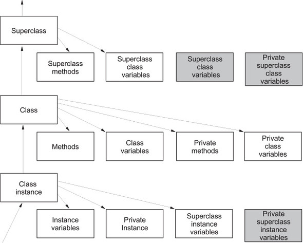

python¶
library¶
toolkit¶
first collection¶
from pathlib import Path
import contextlib
import os
def file_exists(file_path):
return Path(file_path).exists()
def compress_to_bz2_file(source_file, output_file, compression_lvl=9):
import bz2
if 1 <= compression_lvl <= 9:
with open(source_file, 'rb') as data:
tar_bz2_contents = bz2.compress(data.read(), compresslevel=compression_lvl)
else:
raise ValueError("compression level has to be between 1 and 9")
# concatenate_files_in_list(text_files_list, final_file, 'latin-1', True)
def concatenate_files_in_list(file_list, output_file, encode_in='utf-8', is_small=False, use_shutil=False):
# don't forget to specify target folder when opening files!
# todo: check if file was created already
encoding_format = encode_in
print(f"target file -> {output_file}")
readmode = ('rb' if use_shutil else 'r')
writemode = ('wb' if use_shutil else 'w+')
with open(output_file, writemode) as finaltext:
for file_name in file_list:
print(f"currently appending file: {file_name}")
with open(file_name, readmode, encoding=encoding_format) as file_currently_opened:
if use_shutil:
import shutil
shutil.copyfileobj(file_name, finaltext)
elif is_small:
finaltext.write(file_currently_opened.read())
elif not is_small:
for line in file_currently_opened:
finaltext.write(line)
def add_files_from_folder_to_list(filetype, folder_target='./'):
folder = set_folder(folder_target)
print(folder)
print(f"getting files from {folder} of type {filetype} ...")
all_files = []
for path, dirs, files in os.walk(folder):
for filename in files:
if filename.endswith('.txt'):
full_path = os.path.join(path,filename)
all_files.append(full_path)
with contextlib.suppress(Exception):
raise RuntimeError('something went wrong')
return all_files
def set_folder(folder_dir):
isdir = Path(folder_dir)
if not isdir:
raise Exception(f"folder you're trying to set is invalid -> {folder_dir}")
absolute_path = isdir.resolve()
return absolute_path
def test_files_in_list(file_list: []):
print("testing files in list... ")
for file in file_list:
if not Path(file).exists():
print(f"oops: {file} doesn't seem to exist")
conda¶
install¶
download anaconda from https://www.anaconda.com/products/individual#Downloads
wget https://repo.anaconda.com/archive/Anaconda3-2021.05-Linux-x86_64.sh
try anaconda navigator
anaconda-navigator
environments¶
managing environments¶
conda env mgmt documentation
$ conda-env list
# conda environments:
#
base * /home/dadude/anaconda3
helloworld /home/dadude/anaconda3/envs/helloworld
backup environment¶
conda env export --from-history -n helloworld --no-builds | grep -v "prefix" > backup_env.yml
cat backup_env.yml
name: helloworld
channels:
- defaults
dependencies:
- sphinx
- argcomplete
pip¶
package mgmt¶
backup required packages¶
pip3 freeze > pip_requirements.txt
install required packages¶
python3 -m venv envname
source env/bin/activate
pip3 install -r pip_requirements.txt
virtualenvwrapper¶
documentation virtualenvwrapper
install .. code:
sudo apt-get install virtualenvwrapper
add to bashrc once virtualenvwrapper is installed
#Virtualenvwrapper settings:
export WORKON_HOME=$HOME/venv
VIRTUALENVWRAPPER_PYTHON=/usr/bin/python3
source /usr/share/virtualenvwrapper/virtualenvwrapper.sh
(base) dadude@dahost ~/gits/docuhub (main)$ source ~/.bashrc
virtualenvwrapper.user_scripts creating /home/dadude/.venvs/premkproject
virtualenvwrapper.user_scripts creating /home/dadude/.venvs/postmkproject
virtualenvwrapper.user_scripts creating /home/dadude/.venvs/initialize
virtualenvwrapper.user_scripts creating /home/dadude/.venvs/premkvirtualenv
virtualenvwrapper.user_scripts creating /home/dadude/.venvs/postmkvirtualenv
virtualenvwrapper.user_scripts creating /home/dadude/.venvs/prermvirtualenv
virtualenvwrapper.user_scripts creating /home/dadude/.venvs/postrmvirtualenv
virtualenvwrapper.user_scripts creating /home/dadude/.venvs/predeactivate
virtualenvwrapper.user_scripts creating /home/dadude/.venvs/postdeactivate
virtualenvwrapper.user_scripts creating /home/dadude/.venvs/preactivate
virtualenvwrapper.user_scripts creating /home/dadude/.venvs/postactivate
virtualenvwrapper.user_scripts creating /home/dadude/.venvs/get_env_details
workon will work now
(base) dadude@dahost ~/gits/docuhub (main)$ workon
code
deleteme
desktop
docu
docuhub
jupyter
networking
otp_client
portfolio
pytest
testing_mocks
(docu) (helloworld) dadude@dahost ~/gits/docuhub (main)$ workon docuhub
(docuhub) (helloworld) dadude@dahost ~/gits/docuhub (main)$
virtualenvwrapper commands¶
mkvirtualenv new_venv_name
lsvirtualenv
rmvirtualenv name_of_your_env
cpvirtualenv old_virtual_env new_virtual_env
documenting¶
sphinx¶
setup sphinx¶
[ ! -d "$HOME/reqfiles" ] && mkdir $HOME/reqfiles && echo -e "rstcheck\nSphinx\nsphinx-autobuild\nsphinx-rtd-theme\nsphinx-rtd-dark-mode" > $HOME/sphinx_reqs.txt
python3 -m venv sphinx
source ~/venv/sphinx/bin/activate
python3 -m pip install --upgrade pip
#(sphinx) (base) dadude@dahost:~/venv$
pip3 install -r ~/reqfiles/sphinx_reqs.txt
cd ~/gits;git clone git@github.com:brunswyck/docuhub.git;cd ~/gits/docuhub
pip3 requirements¶
docutils
rstcheck
Sphinx
sphinx-autobuild
sphinx-rtd-theme
fundamentals¶
summary¶
list indices¶
x = ["first", "second", "third", "fourth"]
y = [1, 2, 3, 4]
x = [ |
“first”, |
“second”, |
“third”, |
“fourth” ] |
|---|---|---|---|---|
positive index |
0 |
1 |
2 |
3 |
negative index |
-4 |
-3 |
-2 |
-1 |
x[1:-1]
["second", "third"]
x[0:3]
["first", "second", "third"] # last index not included!
x[:3]
["first", "second", "third"]
x[2:]
["third", "fourth"]
# append list to end of list
x[len(x):] = [5, 6, 7]
# make copy you can modify
y = x[:]
# add list to front of list (prepend)
x[:0] # up to first element
x[:0] = [-1, 0]
x
[-1, 0, 1, 2, 3, 4, 5, 6, 7]
# delete part of list
x[1:-1] = [] # 2nd element up to last (0 -> 7) not including 7
x
[-1, 7]
# glue one list to another
x.extend(y)
# x.append(y) will add y list as an element, not extend
[1, 2, 3, 4, [5, 6, 7]]
del x[4]
[1, 2, 3, 4]
del x[:3]
[4]
z = [None] * 4
z
[None, None, None, None]
Warning
x.remove(3) doesn’t remove 4th element, it removes the first 3 it finds in the list
list operations¶
List operation |
Explanation |
Example |
|---|---|---|
[] |
Creates an empty list |
x = [] |
len |
Returns the length of a list |
len(x) |
append |
Adds a single element to the end of a list |
x.append(‘y’) |
extend |
Adds another list to the end of the list |
x.extend([‘a’, ‘b’]) |
insert |
Inserts a new element at a given position in the list |
x.insert(0, ‘y’) |
del |
Removes a list element or slice |
del(x[0]) |
remove |
Searches for and removes a given value from a list |
x.remove(‘y’) |
reverse |
Reverses a list in place |
x.reverse() |
sort |
Sorts a list in place |
x.sort() |
Adds two lists together |
x1 + x2 |
|
Replicates a list |
x = [‘y’] * 3 |
|
min |
Returns the smallest element in a list |
min(x) |
max |
Returns the largest element in a list |
max(x) |
index |
Returns the position of a value in a list |
x.index[‘y’] |
count |
Counts the number of times a value occurs in a list |
x.count(‘y’) |
sum |
Sums the items (if they can be summed) |
sum(x) |
in |
Returns whether an item is in a list |
‘y’ in x |
nested lists¶
m = [[0, 1, 2], [10, 11, 12], [20, 21, 22]]
m[0]
# [0, 1, 2]
m[0][1]
# 1
m[2]
# [20, 21, 22]
m[2][2]
# 22
lists are mutable so can change inside a variable, watch out
nested = [0]
original = [nested, 1]
original
[[0], 1]
nested[0] = 'zero'
original
[['zero'], 1]
original[0][0] = 0
nested
[0]
original
[[0], 1]
# the following makes nested point to a different list
nested = [2]
# so original no longer points to the same list but another one
original
[[0], 1]
deep copy¶
if your list has other lists nested in it you may want a deep copy
original = [[0], 1] <-----
# shallow copy just refer|ences to original list
shallow = original[:] ----
import copy
# deep copy doesn't reference but creates new list
deep = copy.deepcopy(original)
tuples¶
Note
add a comma to force a tuple!
x = 3
y = 4
(x+y)
7
type(x)
# <class 'int'>
type(x+y)
# <class 'int'>
# z is not a tuple!
z = (x+y)
type(z)
# <class 'int'>
# adding a comma it now is a tuple!
z = (x+y,)
type(z)
# <class 'tuple'>
# create empty tuple
x = ()
type(x)
# <class 'tuple'>
packing unpacking¶
(one, two, three, four) = (1, 2, 3, 4)
type(one)
# <class 'int'>
one
1
variable swapping¶
var1, var2 = var2, var1
extended unpacking¶
x = (1, 2, 3, 4)
a, b, *c = x
a, b, c
(1, 2, [3, 4])
a, *b, c = x
a, b, c
(1, [2, 3], 4)
*a, b, c = x
a, b, c
([1, 2], 3, 4)
a, b, c, d, *e = x
a, b, c, d, e
(1, 2, 3, 4, [])
Note
element with * absorbs all elements not matching the others as a list if there are no surplus items it receives an empty list
dictionaries¶
get function¶
if the dictionary doesn’t contain the key, it returns a second argument
print(en_to_nl.get('blue', 'no translation')
blauw
print(en_to_nl.get('purp', 'no translation')
no translation
Note
2nd arg is optional, if not present it returns None
setdefault¶
Note
set a key value if there is no value set! awesome
x = {1: 'one', 2: 'two', 3: '', 4: 'four'}
x.get(2)
'two'
x.get(2, 'pump it')
'two'
# no key 5, so it will return 'pump it'
x.get(5, 'pump it')
'pump it'
x.setdefault(3, 'three')
''
# no key 5, so the message 'five' is returned but key not created
x.get(5, 'five')
'five'
x
{1: 'one', 2: 'two', 3: '', 4: 'four'}
# no key 5, so the key is created along with 'five' value
x.setdefault(5, 'five')
'five'
x
{1: 'one', 2: 'two', 3: '', 4: 'four', 5: 'five'}
type |
immutable? |
hashable? |
dictionary key? |
|---|---|---|---|
int |
yes |
yes |
yes |
float |
yes |
yes |
yes |
boolean |
yes |
yes |
yes |
complex |
yes |
yes |
yes |
str |
yes |
yes |
yes |
bytes |
yes |
yes |
yes |
bytearray |
no |
no |
no |
list |
no |
no |
no |
tuple |
yes |
sometimes |
sometimes |
set |
no |
no |
no |
frozenset |
yes |
yes |
yes |
dictionary |
no |
no |
no |
dictionary as cache¶
calc_cache = {}
def calculation(x, y, z):
if (x, y, z) in calc_cache:
return calc_cache[(x, y, z)]
else:
# some time-consuming calculation
calc_cache[(x, y, z)] = result
return result
for loop tuple¶
somelist = [(1, 2), (3, 4), (5, 6)]
result = 0
# this isn't a dictionary but tuple unpacking
for x, y in somelist:
result = result + (x * y)
result
44
Note
the enumerate function returns (index, item) tuples
combining iterables to for loop over¶
x = [1, 2, 3, 4]
y = ['a', 'b', 'c']
z = zip(x, y)
for element in z:
print(element)
(1, 'a')
(2, 'b')
(3, 'c')
modularity¶
main function & cli arguments¶
import sys
def main(url):
print(url)
if __name__ == '__main__': # the module is being executed directly not imported
main(sys.argv[1]) # the 0th arg is the module/script filename
more on command-line parsing module: https://docs.python.org/3/howto/argparse.html an alternative is docopt: https://github.com/docopt/docopt
docstrings¶
def some_funtion(items):
"""Print items one per line
Args:
An iterable series of printable items
"""
for item in items:
print(items)
module docstrings¶
""" retrieve and print items from a list
Usage:
python3 list.py <list>
"""
import sys
Note
when you now call help on the module you’ll get a lot of information
objects¶
# id() returns a unique identifier for an object
a = 300
id(a)
4298473345
b = 1500
id(b)
4298222345
b = a
id(b)
4298473345 # same as a
id(a) == id(b)
True
a is b
True
function default values for arguments¶
def banner(message, border='-'): # place after args without defaults
line = border * len(message)
print(line)
print(message)
print(line)
banner("Norwegian Blue")
banner("Sun, Moon and Stars", "*")
banner("Sun, Moon and Stars", border="*")
banner(border=".", message="Hello from Earth")
Warning
always use immutable objects like ints and strings as default values eg you dont want a function time to always show the time of first function call
collections¶
tuple¶
k = (391,) # use the trailing comma, otherwise it will be an int
def minmax(items):
return min(items), max(items) # tuples are useful for multiple return values
minmax([83, 33, 82, 39, 88, 31, 86])
# tuple unpacking allows us to destructure into named references
lower, upper = minmax([83, 33, 82, 39, 88, 31, 86])
lower
31
upper
86
# idiomatic python swap
a = 'jelly'
b = 'bean'
a, b = b, a
a
'bean'
# use the tuple() constructor to create tuples from other iterable objects
tuple([561, 1105, 1219, 2466])
(561, 1105, 1219, 2466)
tuple("Patrick")
('P', 'a', 't', 'r', 'i', 'c', 'k')
5 in (2, 3, 5, 18, 22, 55)
True
4 not in (2, 3, 5, 18, 22, 55)
True
string¶
format¶
import unittest
name = "Alan Turing"
age = 42
person = [name, age, "mathematician"]
text = "Hello, my name is {} and I am {} years old and I am a {}.".format(*person)
# Hello, my name is Alan Turing and I am 42 years old an I am a mathematician
typeAge = type(age)
class TestNotebook(unittest.TestCase):
def test_name(self):
self.assertEqual(name, "Alan Turing")
def test_age(self):
self.assertEqual(age, 42)
def test_person(self):
self.assertEqual(person,["Alan Turing", 42, "mathematician"])
def test_text(self):
self.assertEqual(text,"Hello, my name is Alan Turing and I am 42 years old and I am a mathematician.")
def test_type(self):
self.assertEqual(typeAge,type(int()))
unittest.main(argv=[''], verbosity=2, exit=False)
"New" + "found" + "land"
'Newfoundland'
# use join
colors = ';'.join(['#45ff12', '#2323fa', '#1234a2', '#4313ff'])
'#45ff12;#2323fa;#1234a2;#4313ff'
# split them up again
colors.split(';')
['#45ff12', '#2323fa', '#1234a2', '#4313ff']
# using the empty string as a seperator to join
''.join(['high', 'way', 'man'])
'highwayman'
# partion() divides a string -> prefix,seperator,suffix
"unforgetable".partition("forget")
('un', 'forget', 'able')
# usage with tuples
departure, seperator, arrival = "London:Edinburgh".partition(':')
arrival
Edinburgh
# underscore dummy value
origin, _, destination = "Seattle-Boston".partition('-')
# use format() to insert values into strings
"The age of {0} is {1}".format('patrick', 35)
"The age of {0} is {1}. {0}'s birthday is on {2}".format('Patrick', 35, 'June 1')
# they can be ommitted when in the exact order and used only once
"The age of {} is {}".format('patrick', 35)
# use named fields
"Current position {latitude} {longitude}".format(latitude="60N",
longitude="5E")
'Current position 60N 5E'
# access values through keys or indexes with []
pos = (65.2, 23.1, 82.2)
"Galactic position x={pos[0]} y={pos[1] z={pos[2]}".format(pos=pos)
'Galactic position x=65.2 y=23.1 z=82.2'
# replacement field mini-language provides many value n alignment formatting options
import math
"Math constants: pi={m.pi:.3f}, e={m.e:.3f}".format(m=math)
'Math constants: pi=3.142, e=2.718'
help(str)
range¶
list(range(5, 10)) # stop is not included
[5, 6, 7, 8, 9]
# with step argument
list(range(0, 10, 2))
[0, 2, 4, 6, 8]
# avoid range for iterating over lists
for item in list:
print(item)
# not
for item in range(len(list)):
print(item)
# prefer enumerate() for counters
# enumerate() yields (index, value) tuples
t = [5, 333, 8888, 144444, 2012011]
for p in enumerate(t):
print(p)
(0, 6)
(1, 333)
(2, 8888)
(3, 144444)
(4, 2012011)
# improvement with tuple unpacking
for i, v in enumerate(t):
print("i = {}, v = {}".format(i, v))
i = 0, v = 6
i = 1, v = 333
i = 2, v = 8888
i = 3, v = 144444
i = 4, v = 2012011
list¶
# SHALLOW copying a list (contain same object references as the source list!!)
copy_list = sequence[:] # full slice
copy_list = other_list.copy() # use copy method
copy_list = list(some_other_list) # use the list constructor
shallow copies¶
a = [ [1, 2], [3, 4] ]
b = a[:] # create a shallow copy
a[0] = [8, 9] # create new list in a at 0
a[0]
[8, 9]
b[0] # b still references to the old list object b4 a created a new one
[1, 2]
a[1].append(5) # just appending to the list in a also affects the list for b
b
[[1, 2], [3, 4, 5]] # they both still refer to the same object
list repetition¶
# repeat lists using the * operator
c = [21, 37]
d = c * 4
d
[21, 37, 21, 37, 21, 37, 21, 37] # this method is often used to zero a list of fixed length
s = [constant] * size
[0] * 9 # same principle as with list copying so beware, repetition = shallow
# repetition repeats the reference without copying the value
[0, 0, 0, 0, 0, 0, 0, 0, 0]
s = [ [-1, +1] ] * 5
[[-1, +1], [-1, +1], [-1, +1], [-1, +1], [-1, +1]]
s[3].append(7) # because all innerlists refer to same object they are all modified
s
[[-1, 1, 7], [-1, 1, 7], [-1, 1, 7], [-1, 1, 7], [-1, 1, 7]]
more on list¶
w = "the quick brown fox jumps over the lazy dog".split()
['the', 'quick', 'brown', 'fox', 'jumps', 'over', 'the', 'lazy', 'dog']
i = w.index('fox')
i
3
w[i]
'fox'
w.index('unicorn')
Traceback (most recent call last):
File "<stdin>", line 1, in <module>
ValueError: 'unicorn' is not in list
w.count('the')
2
# just test membership
37 in [1, 78, 9, 37, 34, 53]
True
78 not in [1, 78, 9, 37, 34, 53]
True
u = "jackdaws love my big sphinx of quartz".split()
u
['jackdaws', 'love', 'my', 'big', 'sphinx', 'of', 'quartz']
del u[3]
['jackdaws', 'love', 'my', 'sphinx', 'of', 'quartz']
# remove elements by value rather than position
u.remove('jackdaws')
u
['love', 'my', 'sphinx', 'of', 'quartz']
# the equivalent to remove using the index:
del u[u.index('quartz')]
u
['love', 'my', 'sphinx', 'of']
u.remove('pyramid')
Traceback (most recent call last):
File "<stdin>", line 1, in <module>
ValueError: list.remove(x): x not in list
# insertion seq.insert(index, item)
a = "I accidentally the whole universe".split()
a.insert(2, "destroyed")
a
['I', 'accidentally', 'destroyed', 'the', 'whole', 'universe']
# use join method on a space seperator
' '.join(a)
'I accidentally destroyed the whole universe'
growing lists¶
# concatenate lists
m = [2, 1, 3]
n = [4, 7, 11]
k = m + n
k
[2, 1, 3, 4, 7, 11]
# using assignment operator
k += [18, 29, 47]
[2, 1, 3, 4, 7, 11, 18, 29, 47]
# or use the extend method
k.extend([76, 129, 199])
k
[2, 1, 3, 4, 7, 11, 18, 29, 47, 76, 129, 199]
# these techniques work with any iterable series on the righthand side
reversing and sorting lists¶
>>> g = [1, 11, 21, 1211, 112111]
>>> g.reverse()
>>> g
[112111, 1211, 21, 11, 1]
>>> d = [5, 17, 41, 29, 71, 149, 3299, 7, 13, 67]
>>> d.sort()
>>> d
[5, 7, 13, 17, 29, 41, 67, 71, 149, 3299]
>>> d.sort(reverse=True)
>>> d
[3299, 149, 71, 67, 41, 29, 17, 13, 7, 5]
# key argument to sort() method accepts a function for producing a sort key from an item
# e.g. sort words in order of length
>>> h = 'not perplexing do handwriting family where I illegibly know doctors'.split()
>>> h
['not', 'perplexing', 'do', 'handwriting', 'family', 'where', 'I', 'illegibly', 'know', 'doctors']
>>> h.sort(key=len)
>>> h
['I', 'do', 'not', 'know', 'where', 'family', 'doctors', 'illegibly', 'perplexing', 'handwriting']
>>> ' '.join(h)
'I do not know where family doctors illegibly perplexing handwriting'
# sorted() built-in function sorts any iterable series and returns a list
>>> x = [4, 9, 2, 1]
>>> y = sorted(x)
>>> y
[1, 2, 4, 9]
>>> x
[4, 9, 2, 1]
# reversed() built-in function reverses any iterable series
>>> p = [9, 3, 1, 0]
>>> q = reversed(p)
>>> q
<list_reverseiterator object at 0x7ffa18086e48>
>>> list(q)
[0, 1, 3, 9]
# reversed returns an iterator so you need to convert it to a list (explained later)
# these two sort methods will work on any finite iterable source object
dictionary¶
# key objects must be immutable! e.g. Str, numbers and tuples NOT lists!
# value objects can be mutable
# the order in dictionaries are random, don't rely on it
# dict() constructor accepts:
# iterable series of key-vlaue 2-tuples
# keyword arguments - requires keys are valid Python identifiers
# a mapping such as another dict
names_and_ages=[('Alice', 32), ('Bob', 48), ('Charlie', 28), ('Daniel', 33)]
>>> d = dict(names_and_ages)
>>> d
{'Charlie': 28, 'Daniel': 33, 'Alice': 32, 'Bob': 48}
>>> phonetic = dict(a='alfa', b='bravo', c='charlie', d='delta', e='echo', f='foxtrot')
>>> phonetic
{'b': 'bravo', 'a': 'alfa', 'c': 'charlie', 'f': 'foxtrot', 'd': 'delta', 'e': 'echo'}
# copying dictionaries is also shallow
e = d.copy()
e = dict(d)
# Extend a dictionary with update()
f.update(g)
for key in colors:
print("{key} = > {value}".format(key=key, value=colors[key]))
# if you want to iterate only over the values use values()
for value in colors.values():
print(value)
# there is no efficient way to get the key corresponding to a value!!
for key in colors.keys(): # iterable view onto keys - not often needed
print(key)
# adding to a dictionary and using prettyprint
>>> m = {'H': [1, 2, 3],
... 'He': [3, 5],
... 'Li': [6, 7],
... 'Be': [7, 9, 10],
... 'B': [10, 11],
... 'C': [11, 12, 13, 14]}
>>> m['H'] += [4, 5, 6, 7]
>>> m
{'B': [10, 11], 'C': [11, 12, 13, 14], 'Be': [7, 9, 10], 'He': [3, 5], 'Li': [6, 7], 'H': [1, 2, 3, 4, 5, 6, 7]}
>>> m['H'] = [13, 14, 15]
>>> m['N'] = [13, 14, 15]
>>> m
{'B': [10, 11], 'C': [11, 12, 13, 14], 'N': [13, 14, 15], 'Be': [7, 9, 10], 'He': [3, 5], 'Li': [6, 7], 'H': [13, 14, 15]}
>>> from pprint import pprint as pp
>>> pp(m)
{'B': [10, 11],
'Be': [7, 9, 10],
'C': [11, 12, 13, 14],
'H': [13, 14, 15],
'He': [3, 5],
'Li': [6, 7],
'N': [13, 14, 15]}
set¶
set is an unordered collection of unique, immutable objects looks like a dict but each item is a single object
Note
empty {} create a dict so for empty set use the set() constructor
e = set()
e
set()
>>> s = set([2, 4, 16, 64, 4096, 65536, 262144])
>>> s
{4096, 64, 2, 65536, 4, 262144, 16}
>>> for x in s: # order is arbitrary
... print(x)
...
4096
64
2
65536
4
262144
16
>>>
# duplicates are discarded!
# so often used to remove duplicates - not order preserving
>>> t = [1, 4, 2, 1, 7, 9, 9]
>>> set(t)
{1, 2, 4, 9, 7}
>>> for x in s:
... print(x)
...
4096
64
2
65536
4
262144
16
>>> 3 in s
False
>>> 3 not in s
True
>>> s.add(3)
>>> s
{4096, 64, 2, 65536, 4, 262144, 3, 16}
>>> s.add(4)
>>> s
{4096, 64, 2, 65536, 4, 262144, 3, 16}
>>> s.update([5, 55, 555])
>>> s
{4096, 64, 2, 65536, 4, 262144, 3, 5, 555, 16, 55}
>>> s.remove(2)
>>> s
{4096, 64, 65536, 4, 262144, 3, 5, 555, 16, 55}
>>> s.remove(2)
Traceback (most recent call last):
File "<stdin>", line 1, in <module>
KeyError: 2
# discard doesn't throw an error if item not present and so always succeeds
>>> k.discard(2)
# shallow copies
.copy()
>>> n
{4096, 64, 65536, 262144, 4, 3, 5, 555, 16, 55}
>>> m = set(n)
>>> m
{4096, 64, 65536, 262144, 4, 3, 5, 555, 16, 55}
# set algebra showcase
>>> blue_eyes = {'Olivia', 'Harry', 'Lily', 'Jack', 'Amelia'}
>>> blond_hair = {'Harry', 'Jack', 'Amelia', 'Mia', 'Joshua'}
>>> can_smell_hidrogencyanide = {'Harry', 'Amelia'}
>>> taste_ptc = {'Harry' , 'Lily', 'Amelia', 'Lola'}
>>> o_blood = {'Mia', 'Josjua', 'Lily', 'Olivia'}
>>> b_blood = {'Amelia', 'Jack'}
>>> a_blood = {'Harry'}
>>> ab_blood = {'Joshua', 'Lola'}
# find people with blond hair, blue eyes or both -> use union method
# is commutative
>>> blue_eyes.union(blond_hair)
{'Amelia', 'Mia', 'Harry', 'Olivia', 'Joshua', 'Jack', 'Lily'}
>>> blue_eyes.union(blond_hair) == blond_hair.union(blue_eyes)
True
# find people with blond hair AND blue eyes -> use intersection method
>>> blue_eyes.intersection(blond_hair)
{'Harry', 'Jack', 'Amelia'}
>>> blue_eyes.intersection(blond_hair) == blond_hair.intersection(blue_eyes)
True
# find people with blond hair who don't have blue eyes -> use difference method
# non-commutative because people who have blue eyes but not blond hair is not the same
>>> blond_hair.difference(blue_eyes)
{'Joshua', 'Mia'}
>>> blond_hair.difference(blue_eyes) == blue_eyes.difference(blond_hair)
False
# exclusively blond hair OR blue_eyes but not both -> symmetric_difference() method
# commutative
>>> blond_hair.symmetric_difference(blue_eyes)
{'Mia', 'Olivia', 'Joshua', 'Lily'}
>>> blond_hair.symmetric_difference(blue_eyes) == blue_eyes.symmetric_difference(blond_hair)
True
# 3 predicates to tell us about the relationship between sets
# check is one set is a subset of a set -> issubset() method
>>> can_smell_hidrogencyanide.issubset(blond_hair)
True
# test if people who can taste ptc can also taste hydrogencyanide -> use issuperset() method
>>> taste_ptc.issuperset(can_smell_hidrogencyanide)
True
# test that sets have no members in common -> isdisjoint() method
>>> a_blood.isdisjoint(o_blood)
True
collection protocols¶
Protocol |
Implementing Collections |
|---|---|
Container |
str, list, range, tuple, set, bytes, dict |
Sized |
str, list, range, tuple, set, bytes, dict |
Iterable |
str, list, range, tuple, set, bytes, dict |
Sequence |
str, list, range, tuple, set, bytes |
Mutable Sequence |
list |
Mutable Set |
set |
Mutable Mapping |
dict |
- Protocols
To implement a protocol, objects must support certain operations.
Most collections implement container , sized and iterable.
All except dict are sequences.
- Container Protocol
Membership testing using in and not in
- Sized Protocol
Determine number of elements with len(s)
- Iterable Protocol
Can produce and iterator with iter(s)
for item in iterable: do_something(item)
Sequence Protocol
Retrieve elements by index item = seq[index]
Find items by value index = seq.index(item)
Count items num = seq.count(item)
Produce a reversed sequence r = reversed(seq)
Collections Summary - Tuples are immutable sequence types - Literal syntax: optional parentheses around a comma separated list - Single element tuples must use trailing comma
Tuple unpacking - return values and idiomatic swap - Strings are immutable sequence types of Unicode codepoints - String concatenation is most efficiently performed with join() on an empty separator - The partition() method is a useful and elegant string parsing tool. - The format() method provides a powerful way of replacing placeholders with values.
Ranges represent integer sequences with regular intervals - Ranges are arithmetic progressions - The enumerate() function is often a superior alternative to range()
Lists are heterogeneous mutable sequence types - Negative indexes work backwards from the end. - Slicing allows us to copy all or part of a list. - The full slice is a common idiom for copying lists, although the copy() method and list() constructor are less obscure. - List (and other collection) copies are shallow. - List repetition is shallow.
Dictionaries map immutable keys to mutable values - Iteration and membership testing is done with respect to the keys. - Order is arbitrary - The keys(), values() and items() methods provide views onto different aspects of a dictionary, allowing convenient iteration.
Sets store an unordered collection of unique elements - Sets support powerful and expressive set algebra operations and predicates.
Protocols such as iterable, sequence and container characterise the collections.
handling exceptions¶
Raise an exception to interrupt program flow Handle an exception to resume control Unhandled exceptions will terminate the program exception objects contain information about the exceptional event
exception and control flow¶
'''A module for demonstrating exceptions.'''
def convert(s):
'''Convert to an integer.'''
x = int(s) # int contstructor will raise an exception upon entering a string
return x
# type of exception object
# ValueError: invalid literal for int() with base 10: 'somestring'
handling raised exceptions¶
def convert(s):
'''Convert a string to an integer.'''
try: # try block contains code that can raise an exception
x = int(s) # print("Conversion succeeded! x = ", x) # the print won't execute when the exception is raised
except ValueError: # except block performs error handling in the event an exception is raised
# print("conversion failed!")
x = -1
return x
Trying to convert a list with numbers will raise another exception convert([4, 5, 6]) TypeError: int() argument must be a string, a bytes-like object or a number, not ‘list’
Note
the except statement excepts a tuple of exception types
def convert(s):
'''Convert a string to an integer.'''
x = -1
try:
x = int(s)
print("Conversion succeeded! x =", x)
except (ValueError, TypeError):
print("Conversion failed!")
return x
programmer errors¶
IndentationError, SyntaxError and NameError are programmer errors and should be corrected during development
you can use pass when you have an empty except block
def convert(s):
'''Convert a string to an integer.'''
x = -1
try:
x = int(s)
except (ValueError, TypeError):
pass
return x
when you want to interrogate the exception object for more detail use as
import sys
def convert(s):
'''Convert a string to an integer.'''
try:
return int(s)
except (ValueError, TypeError) as e:
print("Conversion error: {}".format(str(e)), file=sys.stderr)
return -1
re-raising exceptions¶
from math import log
import sys
def convert(s):
'''Convert a string to an integer.'''
try:
return int(s)
except (ValueError, TypeError) as e:
print("Conversion error: {}".format(str(e)), file=sys.stderr)
raise # instead of returning an unpythonic error code emit the error msg and reraise the exception object
def string_log(s):
v = convert(s)
return log(v)
exceptions as APIs¶
Callers need to know what exceptions to expect and when
def sqrt(x):
'''Compute square roots using the method of Heron of Alexandria.
Args:
x: The number for which the square root is to be computed.
Returns:
The square root of x.
Raises:
ValueError: If x is negative.
'''
if x < 0:
raise ValueError("Cannot compute square root of negative number {}".format(x))
guess = x
i = 0
while guess * guess != x and i < 20:
guess = (guess + x / guess) / 2.0
i += 1
return guess
def main():
try:
print(sqrt(9))
print(sqrt(2))
print(sqrt(-1))
print("This is never printed.")
except ValueError as e:
print(e, file=sys.stderr)
print("Program execution continues normally here.")
if __name__ == '__main__':
main()
Note
it’s usually not worth checking types, this can limit your functions unnecessarily
Note
it’s Easier to Ask Forgiveness than Permission (example 2)
example1
import os
p = '/path/to/datafile.dat'
# only check for existence, what if file is garbage, what if path refers to dir instead of file
if os.path.exists(p):
process_file(p)
else:
print('No such file as {}'.format(p))
example2
p = '/path/to/datafile.dat'
# no checks in advance
try:
process_file(f)
except OSError as e:
print('Could not process file because {}'.format(str(e)))
Error codes require interspersed, local handling Error codes are silent by default Exceptions allow centralized, non-local handling Exceptions require explicit handling
so we work with exceptions in python
clean-up actions¶
try…finally lets you clean up whether an exception occurs or not
import os
def make_at(path, dir_name):
original_path = os.getcwd()
os.chdir(path)
os.mkdir(dir_name) # if this fails then
os.chdir(original_path) # this won't happen
Note
finally-block is executed no matter how the try-block exits
import os
import sys
def make_at(path, dir_name):
original_path = os.getcwd()
try:
os.chdir(path)
os.mkdir(dir_name)
except OSError as e:
print(e, file=sys.stderr)
raise
finally:
os.chdir(original_path) # runs even if OSError is thrown and handled
platform-specific code¶
"""keypress - A module for detecting a single keypress."""
try:
import msvcrt
def getkey():
"""Wait for a keypress and return a single character string."""
return msvcrt.getch()
except ImportError: # when importing the windos module fails, the error is silenced explicitely, if this fails it will not be silenced
import sys
import tty
import termios
def getkey():
"""Wait for a keypress and return a single character string."""
fd = sys.stdin.fileno()
original_attributes = termios.tcgetattr(fd)
try:
tty.setraw(sys.stdin.fileno())
ch = sys.stdin.read(1)
finally:
termios.tcsetattr(fd, termios.TCSADRAIN, original_attributes)
return ch
# If either of the Unix-specific tty or termios are not found,
# we allow the ImportError to propagate from here
Comprehensions, iterables and generators¶
list comprehensions¶
[ expr(item) for item in iterable ] for each item in the iterable object on the right evaluate the expression on the left
['Why', 'sometimes', 'I', 'have', 'believed', 'as', 'many', 'as', 'six', 'possible', 'things', 'before', 'breakfast']
[len(word) for word in words]
[3, 9, 1, 4, 8, 2, 4, 2, 3, 8, 6, 6, 9]
from math import factorial
f = [ len(str(factorial(x))) for x in range(20) ]
f
[1, 1, 1, 1, 2, 3, 3, 4, 5, 6, 7, 8, 9, 10, 11, 13, 14, 15, 16, 18]
type(f)
#<class 'list'>
set comprehensions¶
{ expr(item) for item in iterable }
{ len(str(factorial(x))) for x in range(20) }
{1, 2, 3, 4, 5, 6, 7, 8, 9, 10, 11, 13, 14, 15, 16, 18}
dictionary comprehensions¶
{ key_expr:value_expr for item in iterable }
If we want both the keys and the values we should use the items() method and then use tuple unpacking country, capital
country_to_capital = {'United Kingdom': 'London',
'Brazil': 'Brazilia',
'Morocco': 'Rabat',
'Sweden': 'Stockholm'}
from pprint import pprint as pp
capital_to_country = { capital: country for country, capital in country_to_capital.items() }
pp(capital_to_country)
{'Brazilia': 'Brazil',
'London': 'United Kingdom',
'Rabat': 'Morocco',
'Stockholm': 'Sweden'}
Note
duplicates: later keys overwrite earlier keys
e.g. only key that begins with first letter x[0] store that word, duplicates will be gone
words = ["hi", "hello", "foxtrot", "hotel"]
{ x[0]: x for x in words }
{'h': 'hotel', 'f': 'foxtrot'}
filtering predicates¶
there is an optional filtering clause
[ expr(item) for item in iterable if predicate(item) ]
from math import sqrt
def is_prime(x):
if x < 2:
return False
for i in range(2, int(sqrt(x)) + 1):
if x % i == 0:
return False
return True
[x for x in range(101) if is_prime(x)]
[2, 3, 5, 7, 11, 13, 17, 19, 23, 29, 31, 37, 41, 43, 47, 53, 59, 61, 67, 71, 73, 79, 83, 89, 97]
# numbers with only 3 divisors
from pprint import pprint as pp
prime_square_divisors = { x*x:(1, x, x*x) for x in range(101) if is_prime(x)}
pp(prime_square_divisors)
{4: (1, 2, 4),
9: (1, 3, 9),
25: (1, 5, 25),
49: (1, 7, 49),
121: (1, 11, 121),
169: (1, 13, 169),
289: (1, 17, 289),
361: (1, 19, 361),
529: (1, 23, 529),
841: (1, 29, 841),
961: (1, 31, 961),
1369: (1, 37, 1369),
1681: (1, 41, 1681),
1849: (1, 43, 1849),
2209: (1, 47, 2209),
2809: (1, 53, 2809),
3481: (1, 59, 3481),
3721: (1, 61, 3721),
4489: (1, 67, 4489),
5041: (1, 71, 5041),
5329: (1, 73, 5329),
6241: (1, 79, 6241),
6889: (1, 83, 6889),
7921: (1, 89, 7921),
9409: (1, 97, 9409)}
iteration protocols¶
iterable protocol iterable objects can be passed to the built-in iter() function to get an iterator
iterator = iter(iterable) iterator protocol Iterator objects can be passed to the built-in next() function to fetch the next item. item = next(iterator)
iterable = ['Spring', 'Summer', 'Autumn', 'Winter']
iterator = iter(iterable)
next(iterator)
'Spring'
next(iterator)
'Summer'
next(iterator)
'Autumn'
next(iterator)
'Winter'
next(iterator)
# Traceback (most recent call last):
# File "<stdin>", line 1, in <module>
# StopIteration
def first(iterable):
iterator = iter(iterable)
try:
return next(iterator)
except StopIteration:
raise ValueError("iterable is empty")
first(["1st", "2nd", "3rd"])
'1st'
first(["1st", "2nd", "3rd"])
'1st'
first(set())
#Traceback (most recent call last):
# File "<stdin>", line 4, in first
#StopIteration
#
#During handling of the above exception, another exception occurred:
#
#Traceback (most recent call last):
# File "<stdin>", line 1, in <module>
# File "<stdin>", line 6, in first
#ValueError: iterable is empty
generators¶
- specify iterable sequences
all generators are iterators
- are lazily evaluated
they only computate the next value on demand
- can model infinite sequences
such as data streams from a sensor with no definite end
- are composable into pipelines
for natural stream processing
def gen123():
yield 1
yield 2
yield 3
# return
# implicit return at the end
g = gen123()
g
# <generator object gen123 at 0x7f3f662e8fc0>
# pass the generator to the function
next(g)
1
next(g)
2
next(g)
3
# now StopIteration exception
#
# Traceback (most recent call last):
# File "<stdin>", line 1, in <module>
# StopIteration
for v in gen123():
print(v)
1
2
3
# remember each call to function creates a new generator object
h = gen123()
i = gen123()
h
#generator object gen123 at 0x7f3f66302048>
i
#generator object gen123 at 0x7f3f663020a0>
def gen246():
print("about to yield 2")
yield 2
print("about to yield 4")
yield 4
print("about to yield 6")
yield 6
g = gen246() # generator = created and returned but non of the code has yet been executed
next(g)
"about to yield 2"
2
next(g) # generator resumes at the point we left off
"about to yield 4"
2
next(g)
"about to yield 6"
6
stateful generators¶
Generators resume execution
Can maintain state in local variables
Complex control flow
Lazy evaluation
take generator
def take(count, iterable):
"""Take items from the front of an iterable.
Args:
count: maximum number of items to retrieve
iterable: the source series
Yields:
at most 'count' items from 'iterable'
"""
counter = 0
for item in iterable:
if counter == count:
return # end sequence when we reach specified count
# return raises StopIteration which is caught internally by the for loop in run_take()
counter += 1 # how many items have been yielded so far
yield item # contains a generator bc it has at least one yield statement
def run_take(): # generators are lazy and only generate values on request
items = [2, 4, 6, 8, 10]
for item in take(3, items): # take(count, iterable) # return raises StopIteration which is caught by
print(item)
if __name__ == "__main__":
run_take()
distinct generator
# 2nd generator
def distinct(iterable):
"""Return unique items by eliminating duplicates
Args:
iterable: source series
Yields:
Unique elements in order from 'iterable'
"""
seen = set()
for item in iterable:
if item in seen:
continue # finishes current iteration of the loop an begins next iteration immediately!
# execution will be transferred back to the for statement to begin next iteration
yield item
seen.add(item) # next call from for loop in run_distinct() will resume here with remembered
# item 5 just yielded
# and then moves up to beginning of for loop again where item is reassigned to second value 7
def run_distinct():
items = [5, 7, 7, 6, 5, 5]
for item in distinct(items):
print(item)
if __name__ == '__main__':
run_distinct()
both combined in pipeline
def take(count, iterable):
counter = 0
for item in iterable:
if counter == count:
return # end sequence when we reach specified count
# return raises StopIteration which is caught internally by the for loop in run_take()
counter += 1 # how many items have been yielded so far
yield item # contains a generator bc it has at least one yield statement
def run_take(): # generators are lazy and only generate values on request
items = [2, 4, 6, 8, 10]
for item in take(3, items): # take(count, iterable) # return raises StopIteration which is caught by
print(item)
# 2nd generator
def distinct(iterable):
seen = set()
for item in iterable:
if item in seen:
continue # finishes current iteration of the loop an begins next iteration immediately!
# execution will be transferred back to the for statement to begin next iteration
yield item
seen.add(item) # next call from for loop in run_distinct() will resume here with first item 5
# and then moves up to beginning of for loop again with second item 7
def run_distinct():
items = [5, 7, 7, 6, 5, 5]
for item in distinct(items):
print(item)
def run_pipeline():
items = [5, 7, 7, 6, 5, 5]
for item in take(3, distinct(items)): # distinct must run first to produce the iterator object argument for take
print(item)
if __name__ == '__main__':
run_pipeline()
laziness and infinite¶
Just in Time Computation
Infinite (or large) sequences • sensor readings • mathematical series • massive files
def lucas():
yield 2
a = 2
b = 1
while True: # infinite while loop
yield b
a, b = b, a + b
for x in lucas():
print(x)
# this will run forever until you pc runs out of memory but demonstrates nicely
generator comprehensions¶
similar syntax to list comprehensions
create a generator object
concise
lazy evaluation
(expr(item) for item in iterable)
million_squares = (x*x for x in range(1, 1000001)) # creates a generator object
list(million_squares) # force evaluation of the generator by using it to create a list
list(million_squares)
[] # repeating it = empty, generators are single use objects!
# each time we call a generator function, we create a generator object
sum(x*x for x in range(1, 1000001)) # sum of first 10mil squares, using a list comprehencsion would take 400MB!
333333833333500000
sum(x*x for x in range(1, 1000001) if x % 17) # with optional if condition
313726019609411764
Note
we didn’t have to use extra parentheses to put a generator comprehension wihtin sum(), this improves readability
using itertools¶
list of iteration tools in python: https://docs.python.org/3/library/itertools.html
using islice and count
from itertools import islice, count
from math import sqrt
def is_prime(x):
if x < 2:
return False
for i in range(2, int(sqrt(x)) + 1):
if x % i == 0:
return False
return True
# do this thousand_primes = islice(all_primes, 1000) but how to generate all primes
# ranges must always be finite, we need an open ended version of range and that is what count() does
# thousand_primes = islice((x for x in count() if is_prime(x)), 1000) # with islice() like with lists
sum(islice((x for x in count() if is_prime(x)), 1000))
3682913
using any(or) and all(and) for iterable series of bool values
any([False, False, True])
True
all([False, False, True])
False
# Are there any prime numbers between 1328 and 1361?
any(is_prime(x) for x in range(1328, 1361))
False
# title() converts first character to uppercase
# check if all city names have capital letters
all(name == name.title() for name in ['London', 'New York', 'Sydney'])
True
# syncronize iterations over 2 iterable series
# eg two series of temperature data
sunday = [12, 14, 15, 15, 17, 21, 22, 22, 23, 22, 20, 18]
monday = [13, 14, 14, 14, 16, 20, 21, 22, 22, 21, 19, 17]
# bind them in pairs of corresponding readings
for item in zip(sunday, monday):
print(item)
(12, 13)
(14, 14)
(15, 14)
(15, 14)
(17, 16)
(21, 20)
(22, 21)
(22, 22)
(23, 22)
(22, 21)
(20, 19)
(18, 17)
# zip yields tuples when iterated
# we can take advantage of this with tuple unpacking in the for loop
for sun, mon in zip(sunday, monday):
print("average =", (sun + mon) / 2)
average = 12.5
average = 14.0
average = 14.5
average = 14.5
average = 16.5
average = 20.5
average = 21.5
average = 22.0
average = 22.5
average = 21.5
average = 19.5
average = 17.5
tuesday = [2, 2, 3, 7, 9, 10, 9, 8, 8]
for temps in zip(sunday, monday, tuesday):
print("min={:4.1f}, max={:4.1f}, average={:4.1f}".format(min(temps), max(temps), sum(temps) / len(temps)))
"""
min= 2.0, max=13.0, average= 9.0
min= 2.0, max=14.0, average=10.0
min= 3.0, max=15.0, average=10.7
min= 7.0, max=15.0, average=12.0
min= 9.0, max=17.0, average=14.0
min=10.0, max=21.0, average=17.0
min= 9.0, max=22.0, average=17.3
min= 8.0, max=22.0, average=17.3
min= 8.0, max=23.0, average=17.7
"""
# now we want one long temperature series for sunday monday and thuesday
# we can then lazily concatenate iterables using itertools chain
# this is different from simply concatenating 3 lists into a new list
# we have no memory impact of data duplication
from itertools import chain
temperatures = chain(sunday, monday, tuesday)
all(t > 0 for t in temperatures)
temperatures = chain(sunday, monday, tuesday)
True
# following shows generator functions, generator expressions, predicate functions and for loops
def lucas():
yield 2
a = 2
b = 1
while True: # infinite while loop
yield b
a, b = b, a + b
for x in (p for p in lucas() if is_prime(p)):
print(x)
2
3
7
11
29
47
199
521
2207
3571
9349
3010349
54018521
370248451
6643838879
119218851371
5600748293801
688846502588399
32361122672259149
""" itertools.chain(*iterables)
Make an iterator that returns elements from the first iterable until it is exhausted, then proceeds to the next iterable, until all of the iterables are exhausted. Used for treating consecutive sequences as a single sequence
"""
https://docs.python.org/3/library/itertools.html#itertools.chain
summary comprehensions generators¶
Comprehensions - Comprehensions are a concise syntax for describing lists, sets and dictionaries. - Comprehensions operate on an iterable source object and apply an optional predicate filter and a mandatory expression, both of which are usually in terms of the current item. - Iterables are objects over which we can iterate item by item. - We retrieve an iterator from an iterable object using the built-in iter() function. - Iterators produce items one-by-one-from the underlying iterable series each time they are passed to the built-in next() function
Generators - Generator functions allow us to describe series using imperative code. - Generator functions contain at least one use of the yield keyword. - Generators are iterators. When advanced with next() the generator starts or resumes execution up to and including the next yield. - Each call to a generator function creates a new generator object. - Generators can maintain explicit state in local variables between iterations. - Generators are lazy, and so can model infinite series of data. - Generator expressions have a similar syntactic form to list comprehensions and allow for a more declarative and concise way of creating generator objects.
list of iteration tools in python: https://docs.python.org/3/library/itertools.html
classes¶
self: the first argument to all instance methods __init__() instance method for initializing new objects
Warning
__init__() is an initializer, not a constructor, self is similar to this. __init__() is to configure an object that already exists by the time it is called
why self._number?
avoid name clash with number()
implementation details of objects start with _
Note
using objects of different types through a common interface = polymorphism
"""Model for aircraft flights."""
class Flight:
"""A flight with a particular passenger aircraft."""
def __init__(self, number, aircraft):
if not number[:2].isalpha():
raise ValueError("No airline code in '{}'".format(number))
if not number[:2].isupper():
raise ValueError("Invalid airline code '{}'".format(number))
if not (number[2:].isdigit() and int(number[2:]) <= 9999):
raise ValueError("Invalid route number '{}'".format(number))
self._number = number
self._aircraft = aircraft
rows, seats = self._aircraft.seating_plan()
self._seating = [None] + [ {letter:None for letter in seats} for _ in rows ]
def number(self):
return self._number
def airline(self):
return self._number[:2]
def aircraft_model(self):
return self._aircraft.model()
def allocate_seat(self, seat, passenger):
"""Allocate a seat to a passenger.
Args:
seat: A seat designator such as '12C' or '21F'.
passenger: The passenger name.
Raises:
ValueError: If the seat is unavailable.
"""
rows, seat_letters = self._aircraft.seating_plan()
letter = seat[-1]
if letter not in seat_letters:
raise ValueError("Invalid seat letter {}".format(letter))
row_text = seat[:1]
try:
row = int(row_text)
except ValueError:
raise ValueError("Invalid seat row {}".format(row_text))
if row not in rows:
raise ValueError("Invalid row number {}".format(row))
if self._seating[row][letter] is not None:
raise ValueError("Seat {} is already occupied.".format(seat))
self._seating[row][letter] = passenger
def _parse_seat(self, seat):
"""Parse a seat designator into a valid row and letter.
Args:
seat: A seat designator such as 12F
Returns:
A tuple containing an integer and a string for row and seat.
"""
row_numbers, seat_letters = self._aircraft.seating_plan()
letter = seat[-1]
if letter not in seat_letters:
raise ValueError("Invalid seat letter {}".format(letter))
row_text = seat[:-1]
try:
row = int(row_text)
except ValueError:
raise ValueError("Invalid seat row {}".format(row_text))
if row not in row_numbers:
raise ValueError("Invalid row number {}".format(row))
return row, letter
def allocate_seat(self, seat, passenger):
"""Allocate a seat to a passenger.
Args:
seat: A seat designator such as '12C' or '21F'.
passenger: The passenger name.
Raises:
ValueError: If the seat is unavailable.
"""
row, letter = self._parse_seat(seat)
if self._seating[row][letter] is not None:
raise ValueError("Seat {} already occupied".format(seat))
self._seating[row][letter] = passenger
def relocate_passenger(self, from_seat, to_seat):
"""Relocate a passenger to a different seat.
Args:
from_seat: The existing seat designator for the
passenger to be moved.
to_seat: The new seat designator.
"""
from_row, from_letter = self._parse_seat(from_seat)
if self._seating[from_row][from_letter] is None:
raise ValueError("No passenger to relocate in seat {}".format(from_seat))
to_row, to_letter = self._parse_seat(to_seat)
if self._seating[to_row][to_letter] is not None:
raise ValueError("Seat {} already occupied".format(to_seat))
self._seating[to_row][to_letter] = self._seating[from_row][from_letter]
self._seating[from_row][from_letter] = None
def num_available_seats(self):
return sum( sum(1 for s in row.values() if s is None)
for row in self._seating
if row is not None)
def make_boarding_cards(self, card_printer):
for passenger, seat in sorted(self._passenger_seats()):
card_printer(passenger, seat, self.number(), self.aircraft_model())
def _passenger_seats(self):
"""An iterable series of passenger seating allocations."""
row_numbers, seat_letters = self._aircraft.seating_plan()
for row in row_numbers:
for letter in seat_letters:
passenger = self._seating[row][letter]
if passenger is not None:
yield (passenger, "{}{}".format(row, letter))
class Aircraft:
def __init__(self, registration):
self._registration = registration
def registration(self):
return self._registration
def num_seats(self):
rows, row_seats = self.seating_plan()
return len(rows) * len(row_seats)
class AirbusA319(Aircraft):
def model(self):
return "Airbus A319"
def seating_plan(self):
return range(1, 23), "ABCDEF"
class Boeing777(Aircraft):
def model(self):
return "Boeing 777"
def seating_plan(self):
# For simplicity's sake, we ignore complex
# seating arrangement for first-class
return range(1, 56), "ABCDEGHJK"
def make_flights():
f = Flight("BA758", AirbusA319("G-EUPT"))
f.allocate_seat('12A', 'Guido van Rossum')
f.allocate_seat('15F', 'Bjarne Stroustrup')
f.allocate_seat('15E', 'Anders Hejlsberg')
f.allocate_seat('1C', 'John McCarthy')
f.allocate_seat('1D', 'Richard Hickey')
g = Flight("AF72", Boeing777("F-GSPS"))
g.allocate_seat('55K', 'Larry Wall')
g.allocate_seat('33G', 'Yukihiro Matsumoto')
g.allocate_seat('4B', 'Brian Kernighan')
g.allocate_seat('4A', 'Dennis Ritchie')
return f, g
def console_card_printer(passenger, seat, flight_number, aircraft):
output = "| Name: {0}" \
" Flight: {1}" \
" Seat: {2}" \
" Aircraft: {3}" \
" |".format(passenger, flight_number, seat, aircraft)
banner = '+' + '-' * (len(output) - 2) + '+'
border = '|' + ' ' * (len(output) - 2) + '|'
lines = [banner, border, output, border, banner]
card = '\n'.join(lines)
print(card)
print()
summary classes¶
All types in Python have a ‘class’
Classes define the structure and behavior of an object
Class is determined when object is created - normally fixed for the lifetime
Classes are the key support for Object-Oriented Programming in Python
Classes defined using the class keyword followed by CamelCase name
Class instances created by calling the class as if it were a function
Instance methods are functions defined inside the class - Should accept an object instance called self as the first parameter
Methods are called using instance.method() - Syntactic sugar for passing self instance to method
The optional __init__() method initialized new instances - If present, the constructor calls __init__() - __init__() is not the constructor
Arguments passed to the constructor are forwarded to the initializer
Instance attributes are created simply by assigning to them
Implementation details are denoted by a leading underscore - There are no public, protected or private access modifiers in Python
Accessing implementation details can be very useful - Especially during development and debugging
Class invariants should be established in the initializer - If the invariants can’t be established raise exceptions to signal failure
Methods can have docstrings, just like regular functions
Classes can have docstrings
Even within an object method calls must be preceded with self
You can have as many classes and functions in a module as you wish - Related classes and global functions are usually grouped together this way
Polymorphism in Python is achieved through duck typing
Polymorphism in Python does not use shared base classes or interfaces
Class inheritance is primarily useful for sharing implementation
All methods are inherited, including special methods like the initializer
Strings support slicing, because they implement the sequence protocol
Following the Law of Demeter can reduce coupling
We can nest comprehensions
It can sometimes be useful to discard the current item in a comprehension
When dealing with one-based collections it’s often easier just to waste one
list entry.
Don’t feel compelled to use classes when a simple function will suffice
Comprehensions or generator expression can be split over multiple lines
Statements can be split over multiple lines using backslash - Use this feature sparingly and only when it improves readability
Use “Ask! Don’t tell.” to avoid tight coupling between objects
recursion¶
Solve problems that can be broken up into sub-problems of the same type
5! (5 factorial) is 5 * 4 * 3 * 2 * 1 (120)
n! = n * (n-1)!
BASE CASE: 1! = 1 -> can be calculated without performing any more factorial function calls
Note
The base case acts as the exit condition of the recursion
def factorial(x):
# base case
if x == 1:
return 1
else:
return x * factorial(x-1)
print(factorial(5)) # 120
"""fibonacci"""
def fibo(n):
if n <= 1:
return n # returns 0 & 1's
else:
return fibo(n-1) + fibo(n-2)
number = 6
for i in range(6):
print(fibo(i))
def power(x, y):
if y == 0:
return 1
else:
return x * power(x, y-1)
print(power(2, 3)) # 8
Note
Recursion can also be indirect. One function can call a second, which calls the first, which calls the second, and so on. This can occur with any number of functions
def is_even(x):
if x == 0:
return True
else:
return is_odd(x-1)
def is_odd(x):
return not is_even(x) # not! else will also return True when odd
is_even(9) # False
is_even(12) # True
is_odd(17) # True
files and resource management¶
- open(file, mode, encoding)
file: path to file (required)
mode: read/write/append, binary/text
encoding: text encoding
https://docs.python.org/3/library/functions.html#open
Character |
Meaning |
|---|---|
‘r’ |
open for reading (default) |
‘w’ |
open for writing, truncating the file first |
‘x’ |
open for exclusive creation, failing if the file already exists |
‘a’ |
open for writing, appending to the end of the file if it exists |
‘b’ |
binary mode |
‘t’ |
text mode (default) |
‘+’ |
open a disk file for updating (reading and writing) |
‘U’ |
universal newlines mode (deprecated) |
write() returns the number of codepoints, not the number of characters
import sys
def main(filename):
f = open(filename, mode='rt', encoding='utf-8')
for line in f:
print(line)
f.close()
if __name__ == '__main__':
main(sys.argv[1])
zip files¶
read zip as panda df¶
# import required modules
import zipfile
import pandas as pd
# read the dataset using the compression zip
df = pd.read_csv('test.zip',compression='zip')
# display dataset
print(df.head())
import zipfile
import pandas as pd
# oppen zipped dataset
with zipfile.ZipFile("test.zip") as z:
# open the csv file in the dataset
with z.open("test.csv") as f:
# read the dataset
train = pd.read_csv(f)
# display dataset
print(train.head())
json¶
read¶
# Python program to read JSON
# from a file
import json
# Opening JSON file
with open('sample.json', 'r') as openfile:
# Reading from json file
json_object = json.load(openfile)
print(json_object)
print(type(json_object))
write¶
# Python program to write JSON
# to a file
import json
# Data to be written
dictionary ={
"name" : "sathiyajith",
"rollno" : 56,
"cgpa" : 8.6,
"phonenumber" : "9976770500"
}
# Serializing json
json_object = json.dumps(dictionary, indent = 4)
# Writing to sample.json
with open("sample.json", "w") as outfile:
outfile.write(json_object)
with open("sample.json", "w") as outfile:
json.dump(dictionary, outfile)
update¶
# Python program to update
# JSON
import json
# JSON data:
x = '{ "organization":"GeeksForGeeks",
"city":"Noida",
"country":"India"}'
# python object to be appended
y = {"pin":110096}
# parsing JSON string:
z = json.loads(x)
# appending the data
z.update(y)
# the result is a JSON string:
print(json.dumps(z))
# Python program to update
# JSON
import json
# function to add to JSON
def write_json(new_data, filename='data.json'):
with open(filename,'r+') as file:
# First we load existing data into a dict.
file_data = json.load(file)
# Join new_dat3a with file_data
file_data.update(new_data)
# Sets file's current position at offset.
file.seek(0)
# convert back to json.
json.dump(file_data, file, indent = 4)
# python object to be appended
y = {"emp_name":'Nikhil',
"email": "nikhil@geeksforgeeks.org",
"job_profile": "Full Time"
}
write_json(y)
csv¶
# importing the csv module
import csv
# field names
fields = ['Name', 'Branch', 'Year', 'CGPA']
# data rows of csv file
rows = [ ['Nikhil', 'COE', '2', '9.0'],
['Sanchit', 'COE', '2', '9.1'],
['Aditya', 'IT', '2', '9.3'],
['Sagar', 'SE', '1', '9.5'],
['Prateek', 'MCE', '3', '7.8'],
['Sahil', 'EP', '2', '9.1']]
# name of csv file
filename = "university_records.csv"
# writing to csv file
with open(filename, 'w') as csvfile:
# creating a csv writer object
csvwriter = csv.writer(csvfile)
# writing the fields
csvwriter.writerow(fields)
# writing the data rows
csvwriter.writerows(rows)
# importing the csv module
import csv
# my data rows as dictionary objects
mydict =[{'branch': 'COE', 'cgpa': '9.0', 'name': 'Nikhil', 'year': '2'},
{'branch': 'COE', 'cgpa': '9.1', 'name': 'Sanchit', 'year': '2'},
{'branch': 'IT', 'cgpa': '9.3', 'name': 'Aditya', 'year': '2'},
{'branch': 'SE', 'cgpa': '9.5', 'name': 'Sagar', 'year': '1'},
{'branch': 'MCE', 'cgpa': '7.8', 'name': 'Prateek', 'year': '3'},
{'branch': 'EP', 'cgpa': '9.1', 'name': 'Sahil', 'year': '2'}]
# field names
fields = ['name', 'branch', 'year', 'cgpa']
# name of csv file
filename = "university_records.csv"
# writing to csv file
with open(filename, 'w') as csvfile:
# creating a csv dict writer object
writer = csv.DictWriter(csvfile, fieldnames = fields)
# writing headers (field names)
writer.writeheader()
# writing data rows
writer.writerows(mydict)
Note
In csv modules, an optional dialect parameter can be given which is used to define a set of parameters specific to a particular CSV format. By default, csv module uses excel dialect which makes them compatible with excel spreadsheets. You can define your own dialect using register_dialect method
csv.register_dialect(
'mydialect',
delimiter = ',',
quotechar = '"',
doublequote = True,
skipinitialspace = True,
lineterminator = '\r\n',
quoting = csv.QUOTE_MINIMAL)
csvreader = csv.reader(csvfile, dialect='mydialect')
# change params
csvreader = csv.reader(csvfile, delimiter = ';', lineterminator = '\n\n')
large csv files¶
import pandas as pd
import numpy as np
import time
# time taken to read data
s_time_chunk = time.time()
chunk = pd.read_csv('gender_voice_dataset.csv', chunksize=1000)
e_time_chunk = time.time()
print("With chunks: ", (e_time_chunk-s_time_chunk), "sec")
df = pd.concat(chunk)
# data
df.sample(10)
xml¶
load¶
assets/data.xml
<?xml version="1.0" encoding="UTF-8"?>
<users>
<user data-id="101">
<nom>Zorro</nom>
<metier>Danseur</metier>
</user>
<user data-id="102">
<nom>Hulk</nom>
<metier>Footballeur</metier>
</user>
<user data-id="103">
<nom>Zidane</nom>
<metier>Star</metier>
</user>
<user data-id="104">
<nom>Beans</nom>
<metier>Epicier</metier>
</user>
<user data-id="105">
<nom>Batman</nom>
<metier>Veterinaire</metier>
</user>
<user data-id="106">
<nom>Spiderman</nom>
<metier>Veterinaire</metier>
</user>
</users>
filename = "./assets/data.xml"
file = open(filename, "r")
print (file.read())
file.close()
lxml¶
import sys
# !conda install --yes --prefix {sys.prefix} lxml
# !{sys.executable} -m pip install numpy
from lxml import etree
# I define my source document
filename = 'assets/data.xml'
tree = etree.parse(filename)
# so in tree.xpath("/users/user/name") there are the tags associated with our search
for user in tree.xpath("/users/user/nom"):
# I want to display only the content (.text) of these tags /users/user/name
print(user.text)
"""
Zorro
Hulk
Zidane
Beans
Batman
Spiderman
"""
tree.xpath("/users/user/nom")[0].text
# 'Zorro'
# You can display the attributes of the tags that store this information
tree = etree.parse(filename)
for user in tree.xpath("/users/user"):
print(user.get("data-id"))
"""
101
102
103
104
105
106
"""
# You can refine the display by proposing to display only users whose job is Veterinary
tree = etree.parse(filename)
for user in tree.xpath("/users/user[metier='Veterinaire']/nom"):
print(user.text)
# Batman
# Spiderman
concatenate files¶
def concatenate_files_in_list(file_list, output_file, encode_in='utf-8', is_small=False, use_shutil=False):
# don't forget to specify target folder when opening files!
encoding_format = encode_in
print(f"target file -> {output_file}")
readmode = ('rb' if use_shutil else 'r')
writemode = ('wb' if use_shutil else 'w+')
with open(output_file, writemode) as finaltext:
for file_name in file_list:
print(f"currently appending file: {file_name}")
with open(file_name, readmode, encoding=encoding_format) as file_currently_opened:
if use_shutil:
import shutil
shutil.copyfileobj(file_name, finaltext)
elif is_small:
finaltext.write(file_currently_opened.read())
elif not is_small:
for line in file_currently_opened:
finaltext.write(line)
concatenate_files_in_list(text_files_list, final_file, 'latin-1', True)
dask¶
Dask is preferred over chunking as it uses multiple CPU cores or clusters of machines (Known as distributed computing). In addition to this, it also provides scaled NumPy, pandas, and sci-kit libraries to exploit parallelism
https://docs.dask.org/en/latest/
import pandas as pd
import numpy as np
import time
from dask import dataframe as df1
# time taken to read data
s_time_dask = time.time()
dask_df = df1.read_csv('gender_voice_dataset.csv')
e_time_dask = time.time()
print("Read with dask: ", (e_time_dask-s_time_dask), "seconds")
# data
dask_df.head(10)
OOP¶
theory¶
static methods¶
"""circle module: contains the Circle class."""
class Circle:
"""Circle class"""
all_circles = [] # all circles that have been created
pi = 3.14159
def __init__(self, r=1):
"""Create a Circle with the given radius"""
self.radius = r
self.__class__.all_circles.append(self) # when instance is initialized it adds itself to all_circles
def area(self):
"""determine the area of the Circle"""
return self.__class__.pi * self.radius * self.radius
@staticmethod
def total_area():
"""Static method to total the areas of all Circles """
total = 0
for c in Circle.all_circles:
total = total + c.area()
return total
>>> import circle
>>> c1 = circle.Circle(1)
>>> c2 = circle.Circle(2)
>>> circle.Circle.total_area()
15.70795
>>> c2.radius = 3
>>> circle.Circle.total_area()
31.415899999999997
>>> circle.__doc__
'circle module: contains the Circle class.'
>>> circle.Circle.__doc__
'Circle class'
>>> circle.Circle.area.__doc__
'determine the area of the Circle'
class methods¶
similar to static methods in that they can be invoked before an object of the class has been instantiated or by using an instance of the class.
Class methods are implicitly passed the class they belong to as their first parameter, so you can code em more simply
"""circle_cm module: contains the Circle class."""
class Circle:
"""Circle class"""
all_circles = []
pi = 3.14159
def __init__(self, r=1):
"""Create a Circle with the given radius"""
self.radius = r
self.__class__.all_circles.append(self)
def area(self):
"""determine the area of the Circle"""
return self.__class__.pi * self.radius * self.radius
@classmethod
def total_area(cls):
total = 0
for c in cls.all_circles: # use cls instead of self.__class__
total = total + c.area()
return total
>>> import circle_cm
>>> c1 = circle_cm.Circle(1)
>>> c2 = circle_cm.Circle(2)
>>> circle_cm.Circle.total_area()
15.70795
>>> c2.radius = 3
>>> circle_cm.Circle.total_area()
31.415899999999997
inheritance¶
class Shape:
def __init__(self, x, y):
self.x = x
self.y = y
class Square(Shape): # Square inherits from Shape
def __init__(self, side=1, x=0, y=0):
super().__init__(x, y) # must call __init__ method of Shape
self.side = side
class Circle(Shape): # Circle inherits from Shape
def __init__(self, r=1, x=0, y=0): # must call __init__ method of Shape
super().__init__(x, y)
self.radius = r
Note
Instead of using super, you could call Shape’s __init__ by explicitly naming the inherited class using Shape.__init__(self, x, y), which would also call the Shape initialization function with the instance being initialized. This technique wouldn’t be as flexible in the long run because it hardcodes the inherited class’s name, which could be a problem later if the design and the inheritance hierarchy change.
Inheritance also comes into effect when you attempt to use a method that isn’t defined in the base classes but is defined in the superclass.
class Shape:
def __init__(self, x, y):
self.x = x
self.y = y
def move(self, delta_x, delta_y):
self.x = self.x + delta_x
self.y = self.y + delta_y
>>> c = Circle(1)
>>> c.move(3, 4)
>>> c.x
3
>>> c.y
4
In the next example, a class variable z is defined for the superclass P and can be accessed in three ways: through the instance c, through the derived class C, or directly through the superclass P:
class P:
z = "Hello"
def set_p(self):
self.x = "Class P"
def print_p(self):
print(self.x)
class C(P):
def set_c(self):
self.x = "Class C"
def print_c(self):
print(self.x)
>>> c = C()
>>> c.set_p()
>>> c.print_p()
Class P
>>> c.print_c()
Class P
>>> c.set_c()
>>> c.print_c()
Class C
>>> c.print_p()
Class C
>>> c.z; C.z; P.z
'Hello'
'Hello'
'Hello'
recap¶
class Circle(Shape):
pi = 3.14159
all_circles = []
def __init__(self, r=1, x=0, y=0):
super().__init__(x, y)
self.radius = r
all_circles.append(self)
@classmethod
def total_area(cls):
area = 0
for circle in cls.all_circles:
area += cls.circle_area(circle.radius)
return area
@staticmethod
def circle_area(radius):
return Circle.pi * radius * radius
>>> c1 = Circle()
>>> c1.radius, c1.x, c1.y
(1, 0, 0)
>>> c2 = Circle(2, 1, 1)
>>> c2.radius, c2.x, c2.y
(2, 1, 1)
>>> c2.move(2, 2)
>>> c2.radius, c2.x, c2.y
(2, 3, 3)
>>> Circle.all_circles
[<__main__.Circle object at 0x7fa88835e9e8>, <__main__.Circle object at
0x7fa88835eb00>]
>>> [c1, c2]
[<__main__.Circle object at 0x7fa88835e9e8>, <__main__.Circle object at
0x7fa88835eb00>]
>>> Circle.total_area()
15.70795
>>> c2.total_area()
15.70795
>>> Circle.circle_area(c1.radius)
3.14159
>>> c1.circle_area(c1.radius)
3.14159
private vars¶
class Mine:
def __init__(self):
self.x = 2
self.__y = 3
def print_y(self):
print(self.__y)
# >>> m = Mine()
# >>> print(m.x)
# 2
# >>> print(m.__y)
# Traceback (innermost last):
# File "<stdin>", line 1, in ?
# AttributeError: 'Mine' object has no attribute '__y'
# >>> m.print_y()
# 3
Note
to provide privacy it mangles the name of private variables and private methods when the code is compiled to bytecode. What specifically happens is that _classname is prepended to the variable name:
>>> dir(m)
['_Mine__y', 'x', ...]
@property¶
class Temperature:
def __init__(self):
self._temp_fahr = 0
@property
def temp(self):
return (self._temp_fahr - 32) * 5 / 9
Note
Without a setter, such a property is read-only. To change the property, you need to add a setter:
@temp.setter
def temp(self, new_temp):
self._temp_fahr = new_temp * 9 / 5 + 32
>>> t = Temperature()
>>> t._temp_fahr
0
>>> t.temp
-17.77777777777778
>>> t.temp = 34
>>> t._temp_fahr
93.2
>>> t.temp
34.0
Note
The 0 in _temp_fahr is converted to centigrade before it’s returned 1. The 34 is converted back to Fahrenheit by the setter
scoping rules¶
When you’re in a method of a class, you have direct access to the local namespace (parameters and variables declared in the method),
the global namespace (functions and variables declared at the module level),
and the built-in namespace (built-in functions and built-in exceptions). These three namespaces are searched in the following order: local, global, and built-in
- You also have access through the self variable to:
the instance’s namespace (instance variables, private instance variables, and superclass instance variables),
its class’s namespace (methods, class variables, private methods, and private class variables), and
its superclass’s namespace (superclass methods and superclass class variables).
These three namespaces are searched in the order instance, class, and then superclass
Note
Private superclass instance variables, private superclass methods, and private superclass class variables can’t be accessed by using self. A class is able to hide these names from its children.
"""cs module: class scope demonstration module."""
mv ="module variable: mv"
def mf():
return "module function (can be used like a class method in other languages): mf()"
class SC:
scv = "superclass class variable: self.scv"
__pscv = "private superclass class variable: no access"
def __init__(self):
self.siv = "superclass instance variable: self.siv (but use SC.siv for assignment)"
self.__psiv = "private superclass instance variable: "no access"
def sm(self):
return "superclass method: self.sm()"
def __spm(self):
return "superclass private method: no access"
class C(SC):
cv = "class variable: self.cv (but use C.cv for assignment)"
__pcv = "class private variable: self.__pcv (but use C.__pcv for assignment)"
def __init__(self):
SC.__init__(self)
self.__piv = "private instance variable: self.__piv"
def m2(self):
return "method: self.m2()"
def __pm(self):
return "private method: self.__pm()"
def m(self, p="parameter: p"):
lv = "local variable: lv"
self.iv = "instance variable: self.xi"
print("Access local, global and built-in namespaces directly")
print("local namespace:", list(locals().keys()))
print(p) # parameter
print(lv) # local var
print("global namespace:", list(globals().keys()))
print(mv) # module var
print(mf()) # module func
print("Access instance, class, and superclass namespaces through 'self'")
print("Instance namespace:",dir(self))
print(self.iv) # instance var
print(self.__piv) # private instance var
print(self.siv) # superclass instance var
print("Class namespace:",dir(C))
print(self.cv) # class var
print(self.m2()) # method
print(self.__pcv) # private class var
print(self.__pm()) # private method
print("Superclass namespace:",dir(SC))
print(self.sm()) # superclass method
print(self.scv) # superclass var through instance
class C’s method m’s local namespace contains the parameters self (which is the instance variable) and p along with the local variable lv (all of which can be accessed directly):
>>> import cs
>>> c = cs.C()
>>> c.m()
Access local, global and built-in namespaces directly
local namespace: ['lv', 'p', 'self']
parameter: p
local variable: lv
method m’s global namespace contains the module variable mv and the module function mf (which, you can use to provide a class method functionality). There are also the classes defined in the module (the class C and the superclass SC). All these classes can be directly accessed:
global namespace: ['C', 'mf', '__builtins__', '__file__', '__package__',
'mv', 'SC', '__name__', '__doc__']
module variable: mv
module function (can be used like a class method in other languages): mf()
“
practice¶
using classes¶
guess a number¶
class GuessNumber:
def __init__(self, lower, upper, number_to_guess):
self.lower = lower
self.upper = upper
self.bingo = number_to_guess
self.number_in_range = False
self.number_positive = False
self.users_guess = None
self.guess_the_number()
def ask_for_int(self) -> int:
return int(input(f"enter an integer number between {self.lower} and {self.upper}: "))
def is_number_in_range(self, number_to_check: int) -> int:
return self.lower <= number_to_check <= self.upper
def is_number_positive(self, number_to_check: int) -> int:
return number_to_check >= 0
def validate_int_input(self) -> int:
validated = False
# keep looping until user inputs a valid integer within range
while not validated:
try:
self.users_guess = self.ask_for_int()
if self.is_number_in_range(self.users_guess) and self.is_number_positive(self.users_guess):
validated = True
else:
validated = False
except ValueError:
print("not an integer man, you playin' me?")
return self.users_guess
def guess_the_number(self):
while self.users_guess != self.bingo:
self.users_guess = self.validate_int_input()
if self.users_guess == self.bingo:
# todo: add count in message
print("Bingooo, you guessed the number.. Wo00ot!?!")
break
elif self.users_guess >= self.bingo:
print("Nnnaah, low's the way to gow")
elif self.users_guess <= self.bingo:
print("Nnnaah, live life bigger bruh")
if __name__ == '__main__':
# initialize GuessNumber instance
guessing1 = GuessNumber(1, 100, 25)
import unittest
class TestGuessNumber(unittest.TestCase):
def test_ask_for_int(self):
n = "55"
# return int(input(f"enter an integer number between {self.lower} and {self.upper}: "))
self.assertTrue(n.strip().isdigit())
def test_is_number_in_range(self, number_to_check):
# return self.lower <= number_to_check <= self.upper
pass
def test_is_number_positive(self, number_to_check):
# return number_to_check >= 0
pass
def test_validate_int_input(self):
# return self.users_guess
pass
def test_guess_the_number(self):
pass
# example play
"""
enter an integer number between 1 and 100: 44
Nnnaah, low's the way to gow
enter an integer number between 1 and 100: 33
Nnnaah, low's the way to gow
enter an integer number between 1 and 100: 11
Nnnaah, live life bigger bruh
enter an integer number between 1 and 100: 22
Nnnaah, live life bigger bruh
enter an integer number between 1 and 100: 2
Nnnaah, live life bigger bruh
enter an integer number between 1 and 100: 0.5
not an integer man, you playin' me?
enter an integer number between 1 and 100: ..
not an integer man, you playin' me?
enter an integer number between 1 and 100: 4
Nnnaah, live life bigger bruh
enter an integer number between 1 and 100: 11
Nnnaah, live life bigger bruh
enter an integer number between 1 and 100: 25
Bingooo, you guessed the number.. Woo000oot!?!
"""
validation¶
non regex ip validation¶
import contextlib
def ui_ask_ip_address():
return input("Enter your IP address: ")
def validate_range_int_list(int_list, lower, upper, step=1):
return [number for number in int_list if int(number) in range(lower, upper, step)]
def convert_to_int_list(list_given: list) -> [int]:
list_with_integers = []
try:
list_with_integers = [int(element) for element in list_given]
except ValueError as err:
print(f"aha not all integers in your list -> {err}")
# exit(1) # prevents loop
return list_with_integers
def valid_ip_address(user_input):
required_length = 4
host_address_octets = user_input.split('.')
host_address_octets = convert_to_int_list(host_address_octets)
octets_list = validate_range_int_list(host_address_octets, 1, 255)
with contextlib.suppress(Exception):
raise RuntimeError('something went wrong')
return len(octets_list) == required_length and int(host_address_octets[-1]) != 0
if __name__ == '__main__':
input_from_user = ui_ask_ip_address()
while not valid_ip_address(input_from_user):
print("not a valid ip :)")
input_from_user = ui_ask_ip_address()
else:
print("valid ip good job")
unittest¶
import unittest
import playground as play
from ddt import ddt, data, unpack
@ddt
class MyTestCase(unittest.TestCase):
@data(('192.168.1.1', True), ('192.168.1.0', False), ('192.168.1.255', False),
('192.168.255.1', False), ('192.168.2.255', False), ('0.1.2.3', False))
@unpack
def test_valid_ip_address(self, input_sim, expected):
print(f"testing: {input_sim}")
result = play.valid_ip_address(input_sim)
self.assertEqual(expected, result)
if __name__ == '__main__':
unittest.main()
web¶
urllib¶
import pathlib
import pprint
from urllib import parse, request
import lxml
# from fake_headers import Headers
import requests
import pathlib
from bs4 import BeautifulSoup
# def generate_fake_headers():
# header = Headers(
# browser="chrome", # Generate only Chrome UA
# os="win", # Generate ony Windows platform
# headers=True # generate misc headers
# )
# fake_headers = []
# for i in range(10):
# fake_headers.append(header.generate())
# return fake_headers
def cleanup_url(baseurl: str, url_extension: str):
base = "https://"
url = base + parse.quote(baseurl)
data = parse.quote(url_extension)
clean_url = parse.urljoin(url, data)
return clean_url
if __name__ == '__main__':
# cookies_available = generate_fake_headers()
# cookie_we_will_use = cookies_available[0]
# https://docs.python-requests.org/en/master/user/advanced/#session-objects
s = requests.Session()
# all cookies received will be stored in the session object
# r = requests.get(cleanup_url(base_url, string_to_forward), cookies=cookie_we_will_use)
sample_url = "https://www.immoweb.be/en/classified/house/for-sale/eeklo/9900/9356868?searchId=60c1d6b1ddb17"
r = requests.get(sample_url)
print(r.status_code)
wanted_html_for_bs = r.content.decode() # <-------- html needed to work with beautiful soup
# file we should write our html to
file_location = pathlib.Path("files/search_results")
# only write if the file doesn't exist yet
if not pathlib.Path.exists(file_location):
with open(file_location, "w+") as f:
f.write(wanted_html_for_bs)
# load the file and make a soup of it!
page = open(file_location)
soup = BeautifulSoup(page.read(), features="lxml")
# get something you want from the soup
wanted = soup.script
print(wanted)
selenium¶
import os.path
from bs4 import BeautifulSoup
import pathlib
from selenium import webdriver
import pickle
# conda install selenium
start_url = 'https://www.immoweb.be/en/search/house/for-sale/eeklo/9900?countries=BE&orderBy=relevance'
# file we should write our list with urls to
file_location = pathlib.Path("files/search_results")
# create files folder if it doesn't exist yet
files_folder = "files"
if not pathlib.Path.exists(pathlib.Path(files_folder)):
os.mkdir(files_folder)
# only open up with selenium if file hasn't been created for us yet with list of links
if not pathlib.Path.exists(file_location):
driver_path = os.path.join(os.environ["HOME"], "drivers", "chromedriver")
driver = webdriver.Chrome(driver_path)
driver.get(start_url)
soup = BeautifulSoup(driver.page_source, features='lxml')
driver.quit()
search_results = []
# todo: loop over every page not just the start_url
for elem in soup.find_all('a', {'class': 'card__title-link'}):
search_results.append(elem.get('href'))
with open(file_location, "wb") as fp:
pickle.dump(search_results, fp)
# load the file and make a soup of it!
page = open(file_location, 'rb')
soup = BeautifulSoup(page.read(), features="lxml")
with open("files/search_results", "rb") as fp:
search_results = pickle.load(fp)
regex¶
searching¶
search method |
description |
|---|---|
re.match |
returns first occurence matching pattern in a string as a match object |
re.search |
returns a match object if there is a match anywhere in the string, unlike match |
re.fullmatch |
looks for match on an entire string |
re.findall |
returns a list containing all matches, iterates over all lines |
re.finditer |
returns an iterator that yields regex matches from a string |
Warning
match only works on the WHOLE string, use search to get a match within a string eg. find a number in xqsdf88mlkj
substitution¶
sub method |
description |
|---|---|
re.sub |
replaces 1 or many matches with a string and returns the result |
re.subn |
like sub but also returns info on number of substitutions made |
substitution by function¶
- if you specify a function, then re.sub() calls that function for each match
it passes each match object as an argument to the function
In this example, f() gets called for each match. As a result, re.sub() converts each alphanumeric portion of <string> to all uppercase and multiplies each numeric portion by 10.
import re
def f(match_obj):
string_match = match_obj.group(0) # The matching string
# s.isdigit() returns True if all characters in s are digits
if string_match.isdigit():
return str(int(string_match) * 10)
else:
return string_match.upper()
re.sub(r'\w+', f, 'foo.10.bar.20.baz.30')
'FOO.100.BAR.200.BAZ.300'
limit number of replacements¶
specify a posivive int for the optional count parameter
re.sub(r'\w+', 'xxx', 'foo.bar.baz.qux')
'xxx.xxx.xxx.xxx'
re.sub(r'\w+', 'xxx', 'foo.bar.baz.qux', count=2)
'xxx.xxx.baz.qux'
re.subn(r'\w+', 'xxx', 'foo.bar.baz.qux')
('xxx.xxx.xxx.xxx', 4)
re.subn(r'\w+', 'xxx', 'foo.bar.baz.qux', count=2)
('xxx.xxx.baz.qux', 2)
def f(match_obj):
m = match_obj.group(0)
if m.isdigit():
return str(int(m) * 10)
else:
return m.upper()
re.subn(r'\w+', f, 'foo.10.bar.20.baz.30')
('FOO.100.BAR.200.BAZ.300', 6)
utility functions¶
re.split: splits a string into substrings using regex as delimiter and returns substrings as a list
re.escape: escapes characters in a regex
# re.split(<regex>, <string>, maxsplit=0, flags=0)
re.split('\s*[,;/]\s*', 'foo,bar ; baz / qux')
['foo', 'bar', 'baz', 'qux']
# with capturing groups = list includes the matching delimiter strings too
re.split('(\s*[,;/]\s*)', 'foo,bar ; baz / qux')
['foo', ',', 'bar', ' ; ', 'baz', ' / ', 'qux']
string = 'foo,bar ; baz / qux'
regex = r'(\s*[,;/]\s*)'
a = re.split(regex, string)
# List of tokens and delimiters
a
['foo', ',', 'bar', ' ; ', 'baz', ' / ', 'qux']
# Enclose each token in <>'s
for i, s in enumerate(a):
# This will be True for the tokens but not the delimiters
if not re.fullmatch(regex, s):
a[i] = f'<{s}>'
# Put the tokens back together using the same delimiters
''.join(a)
'<foo>,<bar> ; <baz> / <qux>'
If you need to use groups but don’t want the delimiters included in the return list, then you can use noncapturing groups:
string = 'foo,bar ; baz / qux'
regex = r'(?:\s*[,;/]\s*)'
re.split(regex, string)
['foo', 'bar', 'baz', 'qux']
# using maxsplit argument
s = 'foo, bar, baz, qux, quux, corge'
re.split(r',\s*', s)
['foo', 'bar', 'baz', 'qux', 'quux', 'corge']
re.split(r',\s*', s, maxsplit=3)
['foo', 'bar', 'baz', 'qux, quux, corge']
re.escape¶
the regex you’re passing in has a lot of special characters that you want the parser to take literally instead of as metacharacters. It saves you the trouble of putting in all the backslash characters manually:
print(re.match('foo^bar(baz)|qux', 'foo^bar(baz)|qux'))
None
re.match('foo\^bar\(baz\)\|qux', 'foo^bar(baz)|qux')
<_sre.SRE_Match object; span=(0, 16), match='foo^bar(baz)|qux'>
re.escape('foo^bar(baz)|qux') == 'foo\^bar\(baz\)\|qux'
True
re.match(re.escape('foo^bar(baz)|qux'), 'foo^bar(baz)|qux')
<_sre.SRE_Match object; span=(0, 16), match='foo^bar(baz)|qux'>
re.compile¶
re.compile: compiles regex and returns the corresponding regex object
re.search(r'(\d+)', 'foo123bar')
# <_sre.SRE_Match object; span=(3, 6), match='123'>
re_obj = re.compile(r'(\d+)')
re.search(re_obj, 'foo123bar')
# <_sre.SRE_Match object; span=(3, 6), match='123'>
re_obj.search('foo123bar')
# <_sre.SRE_Match object; span=(3, 6), match='123'>
Note
What good is precompiling? There are a couple of possible advantages.
if you use a particular regex in your Python code frequently, then precompiling allows you to separate out the regex definition from its uses
s1, s2, s3, s4 = 'foo.bar', 'foo123bar', 'baz99', 'qux & grault'
import re
re.search('\d+', s1)
re.search('\d+', s2)
# <_sre.SRE_Match object; span=(3, 6), match='123'>
re.search('\d+', s3)
# <_sre.SRE_Match object; span=(3, 5), match='99'>
re.search('\d+', s4)
following is more modular & maintainable
s1, s2, s3, s4 = 'foo.bar', 'foo123bar', 'baz99', 'qux & grault'
re_obj = re.compile('\d+')
re_obj.search(s1)
re_obj.search(s2)
# <_sre.SRE_Match object; span=(3, 6), match='123'>
re_obj.search(s3)
# <_sre.SRE_Match object; span=(3, 5), match='99'>
re_obj.search(s4)
regex oject attributes¶
object attribute |
description |
|---|---|
re_obj.flags |
shows any flags that are in effect for the regex |
re_obj.groups |
the number of capturing groups in the regex |
re_obj.groupindex |
a dict mapping each symbolic group name defined by the (?P<name>) construct to corresponding group number |
re_obj.pattern |
regex pattern that produced this object |
re_obj = re.compile(r'(?m)(\w+),(\w+)', re.I)
re_obj.flags
42
re.I|re.M|re.UNICODE
<RegexFlag.UNICODE|MULTILINE|IGNORECASE: 42>
re_obj.groups
2
re_obj.pattern
'(?m)(\\w+),(\\w+)'
re_obj = re.compile(r'(?P<w1>),(?P<w2>)')
re_obj.groupindex
mappingproxy({'w1': 1, 'w2': 2})
re_obj.groupindex['w1']
1
re_obj.groupindex['w2']
2
Note
Note that .flags includes any flags specified as arguments to re.compile(), any specified within the regex with the (?flags) metacharacter sequence, and any that are in effect by default
match object¶
match object is truthy¶
m = re.search('bar', 'foo.bar.baz')
m
<_sre.SRE_Match object; span=(4, 7), match='bar'>
bool(m)
True
if re.search('bar', 'foo.bar.baz'):
print('Found a match')
Found a match
match object methods¶
methods that are available for a match object match:
match method |
description |
|---|---|
match.group() |
The specified captured group or groups from match |
match.__getitem__() |
A captured group from match |
match.groups() |
All the captured groups from match |
match.groupdict() |
A dictionary of named captured groups from match |
match.expand() |
The result of performing backreference substitutions from match |
match.start() |
The starting index of match |
match.end() |
The ending index of match |
match.span() |
Both the starting and ending indices of match as a tuple |
match object attributes¶
match attribute |
description |
|---|---|
match.pos |
effective values of the pos & endpos arguments for the match |
match.endpos |
|
match.lastindex |
index of the last captured group |
match.lastgroup |
name of the last captured group |
match.re |
the compiled regex object for the match |
match.string |
the search string for the match |
re_obj = re.compile(r'\d+')
m = re_obj.search('foo123bar')
m
<_sre.SRE_Match object; span=(3, 6), match='123'>
m.pos, m.endpos
(0, 9)
m = re.search(r'\d+', 'foo123bar')
m
<_sre.SRE_Match object; span=(3, 6), match='123'>
m.pos, m.endpos
(0, 9)
s = 'foo123bar456baz'
m = re.search(r'(?P<n1>\d+)\D*(?P<n2>\d+)', s)
m.lastgroup
'n2'
m = re.search(r'(\w+),(\w+),(\w+)', 'foo,bar,baz')
m.string
'foo,bar,baz'
re_obj = re.compile(r'(\w+),(\w+),(\w+)')
m = re_obj.search('foo,bar,baz')
m.string
'foo,bar,baz'
lookaround¶
http://www.regular-expressions.info/lookaround.html
Lookahead and lookbehind, collectively called “lookaround”, are zero-length assertions just like the start and end of line, and start and end of word anchors explained earlier in this tutorial. The difference is that lookaround actually matches characters, but then gives up the match, returning only the result: match or no match. That is why they are called “assertions”. They do not consume characters in the string, but only assert whether a match is possible or not. Lookaround allows you to create regular expressions that are impossible to create without them, or that would get very longwinded without them.
positive lookahead¶
plus followed by a - +(?=-)
negative lookahead¶
plus not followed by a - (so end of the line) +(?!-)
Note
If you want to store the match of the regex inside a lookahead, you have to put capturing parentheses around the regex inside the lookahead, like this: (?=(regex)). The other way around will not work, because the lookahead will already have discarded the regex match by the time the capturing group is to store its match
lookbehind¶
positive lookbehind¶
match a ‘+’ when preceeded by a ‘-‘ # starting from a plus, lookback to ensure there is a ‘-‘ (?<=-)+
negative lookbehind¶
match a ‘+’ when NOT preceeded by a ‘-‘ # starting from a plus, lookback to ensure there is NO ‘-‘ (?<=-)+
multi-line¶
paragraph = \
'''
<p>
This is a paragraph.
It has got muliple lines.
</p>
'''
re.DOTALL¶
match = re.search(r'<p>.*</p>', paragraph, re.DOTALL)
match.group(0)
'<p>\nThis is a pragraph.\nIt has multiple lines.\n</p>'
Note
using the re.DOTALL flag, we can match patterns that span multiple lines
re.MULTILINE¶
By default the ‘^’ and ‘$’ special characters only apply to the start and end of the entire string.
There is a flag to modify this behavior, The re.MULTILINE flag tells python to make the ‘^’ and ‘$’ special characters match the start or end of any line within a string. Using this flag
re.search(r'^It has.*', paragraph)
# no result
match = re.search(r'^It has.*', paragraph, re.MULTILINE)
match.group(0)
'It has multiple lines.i'
greedy vs non-greedy¶
docs on greedy vs non-greedy
s = '<html><head><title>Title</title>'
len(s)
32
print(re.match('<.*>', s).span())
(0, 32)
print(re.match('<.*>', s).group())
<html><head><title>Title</title>
print(re.match('<.*?>', s).group())
<html>
re.VERBOSE¶
pat = re.compile(r"""
\s* # Skip leading whitespace
(?P<header>[^:]+) # Header name
\s* : # Whitespace, and a colon
(?P<value>.*?) # The header's value -- *? used to
# lose the following trailing whitespace
\s*$ # Trailing whitespace to end-of-line
""", re.VERBOSE)
This is far more readable than:
pat = re.compile(r"\s*(?P<header>[^:]+)\s*:(?P<value>.*?)\s*$")
scraping¶
scrapy¶
create spider¶
scrapy startproject immoscrape
cd immoscrape
scrapy genspider ImmoSpider immoweb.be
immo spider project¶
the spider¶
immo/spiders/ImmoSpider.py
import scrapy
import os
import re
from bs4 import BeautifulSoup
# https://docs.python.org/3/library/codecs.html
import codecs # string encoding and decoding
import pickle
"""
run "scrapy shell" from within immo folder to troubleshoot
run spider from repository immo folder:
(immo) (immo) user@pc ~/gits/challenge-collecting-data/immo (main)$ scrapy crawl ImmoSpider
# spiders folder contains all the spiders for scrapy as Spider classes
# whenever crawling, scrapy looks inside this dir to find the spider with its name provided by the user
"""
from ..items import ImmoItem
file_with_search_results = "../files/search_results"
class ImmoSpider(scrapy.Spider):
# add fields our spider class will need
txt = '.txt' # save scrape results
all = False # scrape whole site or just part of it?
fn = 'immoweb' # filename where results are stored
dn = fn + '.be' # dn = domain name
with open(file_with_search_results, "rb") as fp:
search_results = pickle.load(fp)
first_page = search_results[0]
print(f"first page ------> {first_page}")
# other pages from same site that will be scraped when all = False
scope = [link for link in search_results]
print(f"<-------------------scope start------------------------->\n")
print(f"{scope}")
print(f"<--------------------scope end-------------------------->\n")
# what you call with `$ scrapy crawl ImmoSpider`
# to save to file `$ scrapy crawl ImmoSpider -o quotes.json`
name = 'ImmoSpider'
allowed_domains = [dn]
start_urls = [dn]
# delete scrape results file from disk so each time spider runs, results are fresh
def del_file(self):
if os.path.exists(self.fn + self.txt):
os.remove(self.fn + self.txt)
def write_text(self, i):
with codecs.open(self.fn + self.txt, 'a+', 'utf-8') as f:
f.write(i + '\r\n')
# del files and loop over pages based on how all is True or False
def start_requests(self):
self.del_file() # delete old file
pages = self.first_page if self.all else self.scope
print(f"<--------printing pages start--------->")
print(f"{pages}")
print(f"<----------printing pages end--------->")
for page in pages:
# self.write_text(f"item: {page}")
yield scrapy.Request(page, self.parse) # you could add headers={"User-Agent": "Your Custom User Agent"} here
# used to extract data from each page (self.parse called with yield)
def parse(self, response, **kwargs):
print(f"{response.body}")
self.extract_data(response)
# find needed data inside returned scrapy response
def extract_data(self, response):
item = ImmoItem() # placeholder for data we'll extract
# items you set here -> item['x'] -> have to be set in items.py
# https://doc.scrapy.org/en/latest/topics/selectors.html
# To actually extract the textual data, you must call the selector .get() or .getall() methods
for table_row in response.css("tr.classified-table__row").getall():
print("--------------response-------------------")
print(f"{table_row}")
print("--------------response-------------------")
self.write_text(f"table_row: {table_row}")
item['table_row'] = table_row
# https://docs.scrapy.org/en/latest/topics/debug.html
items¶
immo/items.py
# https://docs.scrapy.org/en/latest/topics/items.html
# containers that will be loaded with scraped data
# are like dictionaries but provide additional protection against populating undeclared fields & typo's
import scrapy
# here we define the attributes that will be extracted
class ImmoItem(scrapy.Item):
table_row = scrapy.Field()
settings.py¶
# Crawl responsibly by identifying yourself (and your website) on the user-agent
#USER_AGENT = 'immo (+http://www.yourdomain.com)'
USER_AGENT = 'Mozilla/5.0 (Windows NT 6.1; Win64; x64) AppleWebKit/537.36 (KHTML, like Gecko) Chrome/70.0.3538.110 Safari/537.36'
find elements with scrapy shell¶
test if scrapy can find the elements on a page by invoking the scrapy shell
scrapy shell 'https://www.immoweb.be/en/search/house/for-sale/eeklo/9900?countries=BE&minPrice=100000&maxPrice=300000&page=1&orderBy=relevance'
# >>> response
# <200 https://www.immoweb.be/en/search/house/for-sale/eeklo/9900?countries=BE&page=4&orderBy=relevance>
# >>> view(response)
beautiful soup¶
https://www.crummy.com/software/BeautifulSoup/bs4/doc/
setup bs4¶
import sys
# !{sys.executable} -m pip install beautifulsoup4
from bs4 import BeautifulSoup
soup = BeautifulSoup(html_doc, "lxml")
# In my file (becode.org) by looking at this html script We can see that the main title is arranged in the h1 tag
for p in soup.find_all('h1'):
# We only retrieve the content ==> .text
print (p.text)
# BeCode.org
find html elements¶
https://www.crummy.com/software/BeautifulSoup/bs4/doc/#a-regular-expression
from bs4 import BeautifulSoup
soup = BeautifulSoup('<html><body><div>asdfasdf</div><p><a>foo</a></p></body></html>')
soup.find_all(['a', 'div'])
# [<div>asdfasdf</div>, <a>foo</a>]
# using a regular expression to find tags that contain a or div:
import re
soup.find_all(re.compile("(a|div)"))
# regex to search in attributes of tags
soup.find_all('a', {'href': re.compile(r'crummy\.com/')})
# regex to find all titles
find_titles = re.compile("(h\d)")
titles = soup.find_all(find_titles)
print(titles)
store_titles = []
for elem in soup.find_all('a',attrs={"class" :"meta-title meta-title-link"}):
store_titles.append(elem.get('href': re.compile("\d{4,7}.html"))
# return a list
"""
<a class="meta-title meta-title-link" href="/film/fichefilm_gen_cfilm=275354.html" title="Chacun chez soi">Chacun chez soi</a>
<a class="meta-title meta-title-link" href="/film/fichefilm_gen_cfilm=272523.html" title="Des hommes">Des hommes</a>
/film/fichefilm_gen_cfilm=275666.html
/film/fichefilm_gen_cfilm=277756.html
/film/fichefilm_gen_cfilm=44282.html
/film/fichefilm_gen_cfilm=274345.html
/film/fichefilm_gen_cfilm=281050.html
/film/fichefilm_gen_cfilm=268680.html
/series/ficheserie_gen_cserie=23474.html
/series/ficheserie_gen_cserie=26101.html
/series/ficheserie_gen_cserie=22429.html
"""
get_titles = re.findall(re.compile("\d{4,7}.html")
apply regex on element string¶
import re
titles = []
title_pattern = r"\d{4,7}\.html"
for elem in soup.find_all('a',attrs={"class" :"meta-title meta-title-link"}):
# results.append(elem.get('href'))
title = elem.get('href')
title = re.search(title_pattern, title)[0]
titles.append(title)
titles
"""
['275354.html',
'272523.html',
'274710.html',
'261793.html',
'265425.html',
'24172.html',
'25512.html',
'25786.html',
'25515.html']"""
slowly get url page content¶
import time
import random
from random import randint
title=[]
synopsis=[]
for link in links_movie:
url=link
# I slow down the frequency of requests to avoid being identified and therefore ban from the site
time.sleep(random.uniform(1.0, 2.0))
r = requests.get(url)
print(url, r.status_code)
soup = BeautifulSoup(r.content,'lxml')
for elem in soup.find_all('div', attrs={"class": "titlebar-title titlebar-title-lg"}):
title.append(elem.text.strip())
for elem in soup.find_all('div', attrs={"class": "content-txt"}):
synopsis.append(elem.text.strip())
# I check the length of the lists before creating the df
len(title),len(synopsis),len(links_movie)
"""
http://www.allocine.fr/film/fichefilm_gen_cfilm=275354.html 200
http://www.allocine.fr/film/fichefilm_gen_cfilm=272523.html 200
...
http://www.allocine.fr/film/fichefilm_gen_cfilm=281050.html 200
http://www.allocine.fr/film/fichefilm_gen_cfilm=268680.html 200
"""
HTTP requests¶
command is the method to use, it specifies the type of request, it can have the values :
“GET” This is the most common way to request a resource. A GET request has no effect on the resource, it must be possible to repeat the request without effect.
“HEAD” This method only asks for information about the resource (the header), without asking for the resource itself.
“POST” This method must be used when a request modifies the resource.
“OPTIONS” This method allows you to obtain the communication options of a resource or the server in general.
“CONNECT” This method allows you to use a proxy as a communication tunnel.
“TRACE” This method asks the server to return what it has received, in order to test and diagnose the connection.
“PUT” This method allows you to add a resource to the server.
“DELETE” This method allows you to delete a resource from the server.
store html in var¶
import requests
# Url of website
url='https://www.becode.org/about/'
# I send my HTTP request with a "GET" to the site server to identify in the url
r = requests.get(url)
# I display the requested url and the return of the server
print(url, r.status_code)
# I ask beautifulSoup to keep in a soup variable the web page to scrape (url) an html script
soup = BeautifulSoup(r.content,'lxml')
soup # prints all html code
selenium¶
Note
Linux: put your geckodriver in the equivalent path at home to /home/YOURNAME/.local/bin
handy libraries¶
import sys
# !{sys.executable} -m pip install tabulate
import bs4
import requests
from bs4 import BeautifulSoup
import numpy as np
import pandas as pd
import json
import re
import lxml.html
import time
import random
from random import randint
import logging
import collections
from time import gmtime, strftime
import re
from tabulate import tabulate
import os
date=strftime("%Y-%m-%d")
print(date)
scraping training¶
inquisitive with bs4 & selenium¶
from selenium import webdriver
from selenium.webdriver import ActionChains
from selenium.webdriver.firefox.firefox_binary import FirefoxBinary
from selenium.webdriver.support.ui import WebDriverWait
from selenium.webdriver.support import expected_conditions as EC
from selenium.webdriver.common.by import By
from selenium.webdriver.remote.webelement import WebElement
from selenium.webdriver.common.keys import Keys
import urllib.parse
import os
import time
import re
import random
import bs4
import shelve
from pprint import pprint as pp
import requests
import browser_cookie3
# testing xpath -> web console -> $x("//a[@href='#ps-container']")
# python3 -m seleniumwire extractcert
# then manually import it under authorities
def assert_level(level):
allowed_levels = ["beginner", "intermediate", "advanced", None]
assert level in allowed_levels, "allowed levels: 'beginner', 'intermediate', 'advanced', 'None (all levels)'"
return level
def assert_sort_on(sort_by):
allowed_sort_by = ["relevance", "newest", "popularity"]
assert sort_by in allowed_sort_by, 'allowed sorts: "relevance", "newest", "popularity"'
return sort_by
def assert_search_period(chosen_time_span):
"""choose between 6M, 1y, 2y or None='all dates'"""
allowed_choices = ["6M", "1y", "2y", None]
assert (chosen_time_span in allowed_choices), "allowed choices: 6M, 1y, 2y or None(all dates)"
return chosen_time_span
def url_prep(txt):
return urllib.parse.quote_plus(txt)
class ScrapeFirefox:
def __init__(self, start_page, topics):
self.home = os.getenv('HOME')
self.start_page = start_page
self.topics = topics
self.urls_on_topic = {topic: [] for topic in self.topics} # initialize dict with topics list
# profile folder visible in "about:profiles"
self.profile = webdriver.FirefoxProfile(self.home + '/.mozilla/firefox/mwnbnmdi.default-release')
self.ff_binary = FirefoxBinary('/usr/bin/firefox')
self.profile.DEFAULT_PREFERENCES['frozen']['extensions.autoDisableScopes'] = 0
# find all configuration items here: http://kb.mozillazine.org/Firefox_:_FAQs_:_About:config_Entries
self.profile.accept_untrusted_certs = True
self.profile.set_preference('extensions.enabledScopes', 15)
# http://kb.mozillazine.org/Network.proxy.type
self.profile.set_preference("network.proxy.type", 5)
self.download_location = self.home + "/cbts"
self.profile.set_preference("browser.download.folderList", 2) # don't use default Downloads directory
self.profile.set_preference("browser.download.manager.showWhenStarting", False) # turns of showing download progress
self.profile.set_preference('browser.download.dir', self.download_location) # sets the directory for downloads
# automatically download the files of the selected mime-types
self.profile.set_preference('browser.helperApps.neverAsk.saveToDisk',
'video/mp4,audio/mp4,video/webm,video/mp2t,audio/aac,application/x-mpegurl,application/vnd.apple.mpegurl')
# self.profile.set_preference("browser.helperApps.alwaysAsk.force", False)
# self.profile.set_preference("browser.download.panel.shown", False)
# self.profile.set_preference("browser.download.manager.alertOnEXEOpen", False)
# self.profile.set_preference("browser.download.manager.focusWhenStarting", False)
# self.profile.set_preference("browser.download.manager.useWindow", False)
# self.profile.set_preference("browser.download.manager.showAlertOnComplete", False)
# self.profile.set_preference("browser.download.manager.closeWhenDone", True) # Close the Download Manager when all downloads are complete
self.ff_options = webdriver.FirefoxOptions()
self.ff_options.set_preference("extensions.lastAppBuildId", "<appID> -1")
self.driver = webdriver.Firefox(firefox_profile=self.profile, firefox_binary=self.ff_binary,
options=self.ff_options)
self.go_to(self.start_page)
self.store = shelve.open("my_topic")
def go_to(self, page):
self.driver.get(page)
def switch_frame(self, css_id):
frame_to_use = self.driver.find_element_by_id(css_id)
self.driver.switch_to.frame(frame_to_use)
def save(self, k, v):
self.store[k] = v
def no_push_notifications(self):
self.switch_frame("webpush-onsite")
push_notifications = self.driver.find_element_by_xpath("//button[normalize-space()='No thanks']")
push_notifications.click()
self.driver.switch_to.default_content()
def handle_notification_popup(self):
notifications_frame = self.driver.find_elements_by_id("webpush-onsite") # browse button/image
if len(notifications_frame) > 0:
self.wait_until_el_available_id("webpush-onsite")
self.no_push_notifications()
else:
self.wait_until_el_available_id("prism-explore")
def wait_until_el_available_id(self, css_id):
element = WebDriverWait(driver=self.driver, timeout=5).until(EC.presence_of_element_located((By.ID, css_id)))
"avoid elem not detected errors"
def wait_until_el_available_select(self, css_select):
element = WebDriverWait(driver=self.driver, timeout=5).until(EC.presence_of_element_located((By.CSS_SELECTOR,
css_select)))
def wait_until_el_available_xpath(self, css_xpath):
element = WebDriverWait(driver=self.driver, timeout=5).until(EC.presence_of_element_located((By.XPATH,
css_xpath)))
def get_pages_on(self, topic):
search_bar = self.driver.find_element_by_xpath("//input[@id='prism-search-input']")
search_bar.clear()
self.slow_type(search_bar, topic, 0.122)
search_bar.send_keys(Keys.RETURN)
def right_click_on(self, element, move_up=1):
act = ActionChains(self.driver)
act.context_click(element)
for up in range(0, move_up):
act.send_keys(Keys.ARROW_DOWN)
act.send_keys(Keys.RETURN).build().perform()
def get_no_of_pages_on_topic(self, current_html):
xpath_no_pages = "//a[@href='#ps-container']"
regex_course_names = r"(?:<h3 class=\".+?\".*?100%;\">)(.*?)(?:</span><span)"
no_of_courses = len(re.findall(regex_course_names, current_html))
if 1 <= no_of_courses <= 25:
no_pages_on_topic = 1
return no_pages_on_topic
else:
no_pages_on_topic = len(self.driver.find_elements_by_xpath(xpath_no_pages))
return no_pages_on_topic
threading¶
non-blocking¶
first example¶
from threading import Thread
import time
class ThreadFunction(Thread):
def __init__(self, name):
Thread.__init__(self)
self.name = name
def run(self):
print(f"Thread {self.name}: starting")
time.sleep(2)
print(f"Thread {self.name}: finishing")
if __name__ == '__main__':
for i in range(5):
thread = ThreadFunction(i)
thread.start()
"""
Thread 0: starting
Thread 1: starting
Thread 2: starting
Thread 3: starting
Thread 4: starting
Thread 2: finishingThread 0: finishingThread 1: finishing
Thread 3: finishing
Thread 4: finishing
"""
each iteration runs in parallel and is executed at the same time. So the final script will only last 2 seconds in total since the code is not blocking.
Parallel programming can be very convenient, but it also has its pitfalls. We will now look at some of them and the methods that exist to avoid them.
thread synchronization¶
Programming multiple instruction streams brings its share of difficulties. At first glance, it seems very convenient to have several parts of our code running at the same time. During a task that may take a long time to run (perhaps downloading information from a website) we can do something else, not just wait for the resource to be downloaded.
But development can be proportionately more complicated. You have to keep in mind that different instruction streams can be advanced to different points at a given time.
example¶
class MyThread(Thread):
def __init__(self, text):
Thread.__init__(self)
self.text = text
def run(self):
print(self.text)
with open('threads.txt', 'a') as f:
f.write(self.text)
thread_1 = MyThread("My First thread! ")
thread_2 = MyThread("My Second thread! ")
thread_3 = MyThread("My third thread! ")
thread_4 = MyThread("My fourth thread! ")
thread_1.start()
thread_2.start()
thread_3.start()
thread_4.start()
f = open("threads.txt")
f.read()
# My Second thread! My First thread! My third thread! My 4e thread!
lock¶
There are several ways to “synchronize” our threads, i.e. to make some of the code only run if no one is using the shared resource. The simplest synchronization mechanism is the lock.
It is an object proposed by threading that is extremely simple to use: at the beginning of our instructions that use our shared resource, we tell the lock to block for the other threads. If another thread wants to use this resource, it must wait until it is released.
from threading import Thread, RLock
lock = RLock()
class SyncThread(Thread):
def __init__(self, text):
Thread.__init__(self)
self.text = text
def run(self):
with lock:
print(self.text)
with open('synch_thread.txt', 'a') as file:
file.write(self.text)
thread_1 = SyncThread("Thread 1 /")
thread_2 = SyncThread("Thread 2 /")
thread_3 = SyncThread("Thread 3 /")
thread_4 = SyncThread("Thread 4 /")
thread_1.start()
thread_2.start()
thread_3.start()
thread_4.start()
We import RLock from the threading module
We create a lock that we put into our lock variable
In our run method, we lock part of our thread.
from threading import Thread, RLock
lock = RLock()
class SyncThread(Thread):
def __init__(self, text):
Thread.__init__(self)
self.text = text
def run(self):
with lock:
print(self.text)
with open('sync_thread.txt', 'a') as file:
file.write(self.text)
if __name__ == '__main__':
thread_1 = SyncThread("Thread 1 /")
thread_2 = SyncThread("Thread 2 /")
thread_3 = SyncThread("Thread 3 /")
thread_4 = SyncThread("Thread 4 /")
thread_1.start()
thread_2.start()
thread_3.start()
thread_4.start()
f = open("sync_thread.txt")
f.read()
# thread order will always be the same
# Thread 1 /
# Thread 2 /
# Thread 3 /
# Thread 4 /
parsing¶
parsing cli options¶
code with cli parsing¶
Todo
revise code
#!/usr/bin/env python3
import os
import re
from youtube_search import YoutubeSearch
import pprint
import subprocess
import ffmpeg
from optparse import OptionParser
import time
pp = pprint.PrettyPrinter(indent=2)
home = os.getenv('HOME')
music_folder = os.path.join(home, "Music")
yt_dl_proc = os.path.join(home, ".local/bin/youtube-dl")
converted_folder = os.path.join(music_folder, "converted")
def convert(song, wanted_format):
song_name = song.rsplit('.', 1)[0]
new_song_name = song_name + "." + wanted_format
song_orig = os.path.join(music_folder, song)
song_dest = os.path.join(converted_folder, new_song_name)
pp.pprint(song_dest)
if not os.path.exists(converted_folder):
os.makedirs(converted_folder)
(
ffmpeg
.input(song_orig)
.output(song_dest, acodec=wanted_format, strict="experimental")
.overwrite_output()
.run(capture_stdout=True)
)
def strip_bad_chars(bad_string):
# coding: utf8
bad_chars = [';', ':', '!', '*', '$', ',', '(', ')', '&']
for character in bad_chars:
bad_string = bad_string.replace(character, '')
# remove weird non string.printable utf-8 characters
bad_string = re.sub(r'[^\x00-\x7f]', r'', bad_string)
return bad_string
def replace_unfriendly_chars(long_string):
"""
1. strip youtube suffix
2. replace spaces with underscores
3. strip bad characters
4. strip trailing chars
5. strip repeating chars
"""
operations = [strip_youtube_suffix, replace_spaces_with_underscores, strip_bad_chars, strip_trailing_chars,
strip_repeating_chars]
for op in operations:
long_string = op(long_string)
return long_string
def strip_trailing_chars(long_string):
return re.sub(r'(\W|_)+(\.\w{3})', r'\2', long_string)
def strip_repeating_chars(long_string):
return re.sub(r'(\W|_){2,}', '_', long_string)
def replace_spaces_with_underscores(long_string):
return re.sub(r'\s', '_', long_string)
def strip_youtube_suffix(from_string, length_suffix=11):
youtube_pattern = r'(\W\w{' + re.escape(str(length_suffix)) + r'})(\.\w{3})'
return re.sub(youtube_pattern, r'\2', from_string) # replace group1, keep matched group2
def loop_over_files_in(folder, apply_this_function):
new_name = ""
for file in os.listdir(folder):
new_name = apply_this_function(file) # todo: check if function returns string
if new_name:
os.rename(os.path.join(folder, file), os.path.join(folder, new_name))
def search_youtube(search_phrase):
results = YoutubeSearch(search_phrase, max_results=10).to_json()
return results
def convert_audio(folder, format_to_convert, wanted_format):
for file in os.listdir(folder):
if file.endswith(format_to_convert):
file_location = os.path.join(folder, file)
print(file_location)
# file_name = file.rsplit('.', 1) # split only once
# convert(file, this_format, to_that_format)
# song = AudioSegment.from_file(file_location, current_format) # song.export(file_location, wanted_format)
def clean_audio_filenames():
loop_over_files_in(music_folder, replace_unfriendly_chars)
# https://github.com/ytdl-org/youtube-dl/blob/master/README.md#readme
def download_youtube_audio(youtube_id, audio_format="opus"):
title_args = [yt_dl_proc, "--get-title", youtube_id]
yt_dl_args = [yt_dl_proc, "-x", "--audio-format", audio_format, "-o", "%(title)s.%(ext)s", youtube_id]
# Specify audio format: "best", "aac", "flac", "mp3", "m4a", "opus", "vorbis", or "wav"; "best" by default; N
# webm container on youtube has ogg audio = opus by default
os.chdir(music_folder)
try:
pp.pprint("downloading " + youtube_id + " in " + str(audio_format) + " format")
subprocess.run(args=yt_dl_args, check=True)
# returns cleaned song_title = filename # .strip() removes trailing \n
song_title = subprocess.run(args=title_args, check=True, capture_output=True, text=True).stdout.strip()
return replace_spaces_with_underscores(str(song_title) + "." + str(audio_format))
except subprocess.CalledProcessError as proc_err:
print("Failed to run youtube-dl with error: " + str(proc_err))
def check_youtube_id(yt_id):
id_pattern = r'\w{11}'
result = re.match(id_pattern, yt_id)
if result and len(yt_id) == 11:
return result
else:
raise Exception("youtube id has to be exactly 11 alphanumeric characters")
# https://docs.python.org/3/library/optparse.html
def main():
usage = "usage: %prog [options] youtube_id"
parser = OptionParser()
# parser.add_option("-i", "--input", dest="input_format", help="audio format as input, eg: ogg", metavar="INPUT")
parser.add_option("-o", "--out-format", dest="output_format", default="opus",
help="Specify audio format: \"best\", \"aac\", \"flac\", \"mp3\", \"m4a\","
" \"opus\", \"vorbis\", \"wav\" \"best\"",
metavar="OUTPUT")
parser.add_option("-v", action="store_true", dest="verbose", default=True, help="let's hear it!")
parser.add_option("-q", action="store_false", dest="verbose", help="hush little puppy :)")
(options, args) = parser.parse_args()
pp.pprint("options: " + str(options))
pp.pprint("arguments: " + str(args))
youtube_id = "Wa9YSAdbKh8"
if len(args) < 1:
raise Exception("youtube id argument required")
elif len(args) > 1:
raise Exception("only Youtube id required, don't specify additional arguments")
elif check_youtube_id(args[0]):
youtube_id = args[0]
else:
raise Exception("not a valid youtube id given as argument, pls double check")
pp.pprint(search_youtube('binaural music focus'))
wanted_format = 'mp3'
song_downloaded = download_youtube_audio(youtube_id)
# clean_audio_filenames()
# time.sleep(10)
# convert(song_downloaded, "m4a")
test_song = "test_song.m4a"
# convert(test_song, "m4a")
numpy¶
links¶
vocabulary¶
each dimension = an axis
number of axes = the rank
a 3x4 matrix is an array of rank 2 (2-dimensional)
first axis has length 3, second length 4
array([[0., 0., 0., 0.], [0., 0., 0., 0.], [0., 0., 0., 0.]])
list(axis length) = shape of array
matrix shape = (3, 4)
rank is equal to shape’s length
size of an array = total number of elements = product axis lengths (3*4=12)
creating arrays¶
np.array¶
create an array numpy with two rows and three columns
A = np.array([[1,2,3],[4,5,6]])
# array([[1, 2, 3],
# [4, 5, 6]])
show dimensions¶
A.shape
# (2, 3)
np.zeros¶
zeros = np.zeros((2,3))
# array([[0., 0., 0.],
# [0., 0., 0.]])
np.ones¶
ones = np.ones((2,3))
# array([[1., 1., 1.],
# [1., 1., 1.]])
np.arange¶
np.arange(10)
# array([0, 1, 2, 3, 4, 5, 6, 7, 8, 9])
Note
Like the range() function in python, we can also indicate the start point, the end point and the step. np.arange(start, end, step)
np.arange(0, 10, 2)
# array([0, 2, 4, 6, 8])
np.linspace¶
must have same distance/space between values create 5 values between 0 and 1 evenly spaced
np.linspace(0, 1, 5)
# array([0. , 0.25, 0.5 , 0.75, 1. ])
np.eye¶
returns identity matrix (diagonal 1s & 0s elsewhere)
np.eye(3)
# array([[1., 0., 0.],
# [0., 1., 0.],
# [0., 0., 1.]])
shape ndim size¶
a = np.zeros((3,4))
# array([[0., 0., 0., 0.],
# [0., 0., 0., 0.],
# [0., 0., 0., 0.]])
a.shape
# (3, 4)
a.ndim # equal to len(a.shape), which is the rank
# 2
a.size
# 12
np.concatenate¶
concatenate or join arrays
x = np.array([1, 2, 3])
y = np.array([3, 2, 1])
np.concatenate([x, y])
# array([1, 2, 3, 3, 2, 1])
If the arrays are multidimensional, you can use either vstack (vertical) or hstack (horizontal).
Note
stack em horizontally or stack em vertically :)
x = np.array([1, 2, 3])
grid = np.array([[9, 8, 7], [6, 5, 4]])
np.vstack([x, grid])
# array([[1, 2, 3],
# [9, 8, 7],
# [6, 5, 4]])
N-dimensional arrays¶
create 3D array rank 3 with shape (2, 3, 4)
np.ones((2, 3, 4))
# [[[1. 1. 1. 1.]
# [1. 1. 1. 1.]
# [1. 1. 1. 1.]]
#
# [[1. 1. 1. 1.]
# [1. 1. 1. 1.]
# [1. 1. 1. 1.]]]
type(np.ones((2,3,4)))
# numpy.ndarray
np.full¶
create array with given shape and given value
np.full((3,4), np.pi)
# array([[3.14159265, 3.14159265, 3.14159265, 3.14159265],
# [3.14159265, 3.14159265, 3.14159265, 3.14159265],
# [3.14159265, 3.14159265, 3.14159265, 3.14159265]])
np.empty¶
uninitialized array (content comes from memory and is not predictable)
np.empty((2,3))
# array([[0.4875119 , 0.78426035, 0.71177185, 0.58423021],
# [0.89637291, 0.25875126, 0.20124882, 0.03091878],
# [0.1340354 , 0.05263092, 0.76936044, 0.54766349]])
array data¶
np.dtype¶
Available data types include int8, int16, int32, int64, uint8|16|32|64, float16|32|64 and complex64|128
Check out the documentation for the full list. https://numpy.org/doc/stable/reference/arrays.dtypes.html
ndarrays have to have the same data type you can check with the dtype attribute
c = np.arange(1, 5)
print(c.dtype, c)
# int64 [1 2 3 4]
c = np.arange(1.0, 5.0)
print(c.dtype, c)
# float64 [1. 2. 3. 4.]
d = np.arange(1, 5, dtype=np.complex64)
print(d.dtype, d)
# complex64 [1.+0.j 2.+0.j 3.+0.j 4.+0.j]
itemsize¶
The itemsize attribute returns the size (in bytes) of each item:
e = np.arange(1, 5, dtype=np.complex64)
e.itemsize
# 8
data buffer¶
An array’s data is actually stored in memory as a flat (one dimensional) byte buffer It is available via the data attribute (you will rarely need it, though).
f = np.array([[1,2],[1000, 2000]], dtype=np.int32)
f.data
# <memory at 0x7f8765b175f0>
dive into arrays¶
np.random.seed(0)
x1 = np.random.randint(10, size=6)
x1
# array([5, 0, 3, 3, 7, 9])
Print the first 5 elements of an array:
print(x1[:5])
# [5 0 3 3 7]
Print the elements from the 6th and on of an array:
print(x1[5:])
# [9]
Print every two elements of an array:
print(x1[::2])
# [5 3 7]
arithmetic operations¶
operators¶
a = np.array([14, 23, 32, 41])
b = np.array([5, 4, 3, 2])
print("a + b =", a + b)
print("a - b =", a - b)
print("a * b =", a * b)
print("a / b =", a / b)
print("a // b =", a // b)
print("a % b =", a % b)
print("a ** b =", a ** b)
# a + b = [19 27 35 43]
# a - b = [ 9 19 29 39]
# a * b = [70 92 96 82]
# a / b = [ 2.8 5.75 10.66666667 20.5 ]
# a // b = [ 2 5 10 20]
# a % b = [4 3 2 1]
# a ** b = [537824 279841 32768 1681]
matrix addition & subtraction¶
Note
they must have the same dimensions ValueError: operands could not be broadcast together with shapes (2,3) (2,2) 3 columns and 2 columns can’t be added
A = np.array([[1,2,3],[4,5,6]])
B = np.array([[7,8,9],[10,11,12]])
C = A + B
C
# array([[ 8, 10, 12],
# [14, 16, 18]])
A = np.array([[1,2,3],[4,5,6]])
B = np.array([[7,8,9],[10,11,12]])
C = A - B
C
# array([[-6, -6, -6],
# [-6, -6, -6]])
matrix multiplication¶
multiple all values
C = A * 2
C
# array([[ 2, 4, 6],
# [ 8, 10, 12]])
Warning
columns in A must be equal to rows in B
A = np.array([[1,2,3],[4,5,6]])
B = np.array([[1,2],[3,4],[5,6]])
print(A.shape, B.shape)
# (2, 3) (3, 2)
C = A.dot(B)
C
# array([[22, 28],
# [49, 64]])
Note
- if columns/rows don’t correspond you get following error
ValueError: shapes (2,3) and (2,3) not aligned: 3 (dim 1) != 2 (dim 0)
To solve the problem we can make a transposition
BT = B.T
BT.shape
# (3, 2)
We can now perform the multiplication
A.dot(BT)
# array([[14, 32],
# [32, 77]])
broadcasting¶
https://numpy.org/doc/stable/user/basics.broadcasting.html
first rule¶
If the arrays do not have the same rank, then a 1 will be prepended to the smaller ranking arrays until their ranks match.
h = np.arange(5).reshape(1, 1, 5)
h
# array([[[0, 1, 2, 3, 4]]])
Now let’s try to add a 1D array of shape (5,) to this 3D array of shape (1,1,5). Applying the first rule of broadcasting!
h + [10, 20, 30, 40, 50] # same as: h + [[[10, 20, 30, 40, 50]]]
# array([[[10, 21, 32, 43, 54]]])
second rule¶
two dimensions are compatible when one of them is 1
A (2d array): 5 x 4
B (1d array): 1
Result (2d array): 5 x 4
A (2d array): 5 x 4
B (1d array): 4
Result (2d array): 5 x 4
A (3d array): 15 x 3 x 5
B (3d array): 15 x 1 x 5
Result (3d array): 15 x 3 x 5
A (3d array): 15 x 3 x 5
B (2d array): 3 x 5
Result (3d array): 15 x 3 x 5
A (3d array): 15 x 3 x 5
B (2d array): 3 x 1
Result (3d array): 15 x 3 x 5
k = np.arange(6).reshape(2, 3)
k
# array([[0, 1, 2],
# [3, 4, 5]])
Let’s try to add a 2D array of shape (2,1) to this 2D ndarray of shape (2, 3). NumPy will apply the second rule of broadcasting:
k + [[100], [200]] # same as: k + [[100, 100, 100], [200, 200, 200]]
# array([[100, 101, 102],
# [203, 204, 205]])
Combining rules 1 & 2, we can do this:
k + [100, 200, 300] # after rule 1: [[100, 200, 300]], and after rule 2: [[100, 200, 300], [100, 200, 300]]
# array([[100, 201, 302],
# [103, 204, 305]])
And also, very simply:
k + 1000 # same as: k + [[1000, 1000, 1000], [1000, 1000, 1000]]
# array([[1000, 1001, 1002],
# [1003, 1004, 1005]])
examples¶
>>> x = np.arange(4)
>>> xx = x.reshape(4,1)
>>> y = np.ones(5)
>>> z = np.ones((3,4))
>>> x.shape
(4,)
>>> y.shape
(5,)
>>> x + y
ValueError: operands could not be broadcast together with shapes (4,) (5,)
>>> xx.shape
(4, 1)
>>> y.shape
(5,)
>>> (xx + y).shape
(4, 5)
>>> xx + y
array([[ 1., 1., 1., 1., 1.],
[ 2., 2., 2., 2., 2.],
[ 3., 3., 3., 3., 3.],
[ 4., 4., 4., 4., 4.]])
>>> x.shape
(4,)
>>> z.shape
(3, 4)
>>> (x + z).shape
(3, 4)
>>> x + z
array([[ 1., 2., 3., 4.],
[ 1., 2., 3., 4.],
[ 1., 2., 3., 4.]])
Broadcasting provides a convenient way of taking the outer product (or any other outer operation) of two arrays. The following example shows an outer addition operation of two 1-d arrays:
>>> a = np.array([0.0, 10.0, 20.0, 30.0])
>>> b = np.array([1.0, 2.0, 3.0])
>>> a[:, np.newaxis] + b
array([[ 1., 2., 3.],
[ 11., 12., 13.],
[ 21., 22., 23.],
[ 31., 32., 33.]])
Here the newaxis index operator inserts a new axis into a, making it a two-dimensional 4x1 array. Combining the 4x1 array with b, which has shape (3,), yields a 4x3 array.
math and stats functions¶
ndarray methods¶
Some functions are simply ndarray methods, for example:
a = np.array([[-2.5, 3.1, 7], [10, 11, 12]])
print(a)
print("mean =", a.mean())
# [[-2.5 3.1 7. ]
# [10. 11. 12. ]]
# mean = 6.766666666666667
Note
this computes the mean of all elements in the ndarray, regardless of its shape
Here are a few more useful ndarray methods:
for func in (a.min, a.max, a.sum, a.prod, a.std, a.var):
print(func.__name__, "=", func())
min = -2.5
max = 12.0
sum = 40.6
# prod = -71610.0
# std = 5.084835843520964
# var = 25.855555555555554
These functions accept an optional argument axis which lets you ask for the operation to be performed on elements along the given axis. For example:
c=np.arange(24).reshape(2,3,4)
c
"""
array([[[ 0, 1, 2, 3],
[ 4, 5, 6, 7],
[ 8, 9, 10, 11]],
[[12, 13, 14, 15],
[16, 17, 18, 19],
[20, 21, 22, 23]]])"""
c.sum(axis=0) # sum across matrices
"""
array([[12, 14, 16, 18],
[20, 22, 24, 26],
[28, 30, 32, 34]])"""
c.sum(axis=1) # sum across rows
"""
array([[12, 15, 18, 21],
[48, 51, 54, 57]])"""
c.sum(axis=(0,2)) # sum across matrices and columns
# array([ 60, 92, 124])
0+1+2+3 + 12+13+14+15, 4+5+6+7 + 16+17+18+19, 8+9+10+11 + 20+21+22+23
# (60, 92, 124)
universal functions¶
wrappers¶
NumPy also provides fast elementwise functions called universal functions, or ufunc. They are vectorized wrappers of simple functions. For example square returns a new ndarray which is a copy of the original ndarray except that each element is squared:
a = np.array([[-2.5, 3.1, 7], [10, 11, 12]])
np.square(a)
array([[ 6.25, 9.61, 49. ],
[100. , 121. , 144. ]])
Here are a few more useful unary ufuncs:
print("Original ndarray")
print(a)
for func in (np.abs, np.square, np.exp, np.sign, np.ceil, np.modf, np.isnan, np.cos):
print("\n", func.__name__)
print(func(a))
Original ndarray
[[-2.5 3.1 7. ]
[10. 11. 12. ]]
absolute
[[ 2.5 3.1 7. ]
[10. 11. 12. ]]
square
[[ 6.25 9.61 49. ]
[100. 121. 144. ]]
exp
[[8.20849986e-02 2.21979513e+01 1.09663316e+03]
[2.20264658e+04 5.98741417e+04 1.62754791e+05]]
sign
[[-1. 1. 1.]
[ 1. 1. 1.]]
ceil
[[-2. 4. 7.]
[10. 11. 12.]]
modf
(array([[-0.5, 0.1, 0. ],
[ 0. , 0. , 0. ]]), array([[-2., 3., 7.],
[10., 11., 12.]]))
isnan
[[False False False]
[False False False]]
cos
[[-0.80114362 -0.99913515 0.75390225]
[-0.83907153 0.0044257 0.84385396]]
numpractice¶
print numpy version and the configuration¶
import numpy as np
print(np.version.full_version)
print(np.version.full_version)
1.20.3
create a null vector of size 10¶
import numpy as np
x = np.zeros(10)
print(x)
[0. 0. 0. 0. 0. 0. 0. 0. 0. 0.]
find memory size of any array¶
x.size # 10
x.itemsize # 8 in bytes
print(x.size * x.itemsize)
nbytes: attribute gives total bytes consumed by the elements of the NumPy array¶
print(f"mem size of numpy array: {x.nbytes}")
80
mem size of numpy array: 80
get the docs on numpy add function¶
print(np.info(np.add))
add(x1, x2, /, out=None, *, where=True, casting='same_kind', order='K', dtype=None, subok=True[, signature, extobj])
"""
Add arguments element-wise.
Parameters
----------
x1, x2 : array_like
The arrays to be added.
If ``x1.shape != x2.shape``, they must be broadcastable to a common
shape (which becomes the shape of the output).
out : ndarray, None, or tuple of ndarray and None, optional
A location into which the result is stored. If provided, it must have
a shape that the inputs broadcast to. If not provided or None,
a freshly-allocated array is returned. A tuple (possible only as a
keyword argument) must have length equal to the number of outputs.
where : array_like, optional
This condition is broadcast over the input. At locations where the
condition is True, the `out` array will be set to the ufunc result.
Elsewhere, the `out` array will retain its original value.
Note that if an uninitialized `out` array is created via the default
``out=None``, locations within it where the condition is False will
remain uninitialized.
**kwargs
For other keyword-only arguments, see the
:ref:`ufunc docs <ufuncs.kwargs>`.
Returns
-------
add : ndarray or scalar
The sum of `x1` and `x2`, element-wise.
This is a scalar if both `x1` and `x2` are scalars.
Notes
-----
Equivalent to `x1` + `x2` in terms of array broadcasting.
Examples
--------
>>> np.add(1.0, 4.0)
5.0
>>> x1 = np.arange(9.0).reshape((3, 3))
>>> x2 = np.arange(3.0)
>>> np.add(x1, x2)
array([[ 0., 2., 4.],
[ 3., 5., 7.],
[ 6., 8., 10.]])
The ``+`` operator can be used as a shorthand for ``np.add`` on ndarrays.
>>> x1 = np.arange(9.0).reshape((3, 3))
>>> x2 = np.arange(3.0)
>>> x1 + x2
array([[ 0., 2., 4.],
[ 3., 5., 7.],
[ 6., 8., 10.]])
"""
create a vector with values ranging from 10 to 49¶
# https://numpy.org/doc/stable/reference/generated/numpy.arange.html
# numpy.arange([start, ]stop, [step, ]dtype=None, *, like=None)¶
x = np.arange(10, 50, 1)
x
array([10, 11, 12, 13, 14, 15, 16, 17, 18, 19, 20, 21, 22, 23, 24, 25, 26,
27, 28, 29, 30, 31, 32, 33, 34, 35, 36, 37, 38, 39, 40, 41, 42, 43,
44, 45, 46, 47, 48, 49])
Reverse a vector (first element becomes last)¶
# https://numpy.org/doc/stable/reference/generated/numpy.flip.html?highlight=reverse
import copy
A = np.arange(8).reshape((2, 4))
print(A)
B = copy.deepcopy(np.flip(A))
B
[[0 1 2 3]
[4 5 6 7]]
array([[7, 6, 5, 4],
[3, 2, 1, 0]])
create 3x3 matrix w values ranging from 0 to 8¶
A = np.array([np.arange(0,3), np.arange(3, 6), np.arange(6, 9)])
# now with reshape
# https://numpy.org/doc/stable/reference/generated/numpy.reshape.html?highlight=reshape#numpy.reshape
B = np.arange(0, 9, 1).reshape(3, 3)
B
array([[0, 1, 2],
[3, 4, 5],
[6, 7, 8]])
Find indices of non-zero elements from [1,2,0,0,4,0]¶
# https://numpy.org/doc/stable/reference/generated/numpy.nonzero.html
x = np.array([1,2,0,0,4,0])
np.nonzero(x)
(array([0, 1, 4]),)
create a 3x3 identity matrix¶
X
X = np.identity(3)
X
array([[1., 0., 0.],
[0., 1., 0.],
[0., 0., 1.]])
create a 3x3x3 array with random values¶
X = np.random.rand(3,3)
print(X)
Y = np.random.rand(3,3,3)
Y
[[0.98332566 0.84116444 0.75410407]
[0.9790408 0.15237009 0.35937882]
[0.60683975 0.3339919 0.41256535]]
array([[[0.76573681, 0.29366637, 0.47391383],
[0.71257996, 0.62837487, 0.95957082],
[0.92516253, 0.38340549, 0.74710955]],
[[0.02144192, 0.00834815, 0.48610525],
[0.00178446, 0.91594102, 0.9474838 ],
[0.21823699, 0.77754962, 0.5684341 ]],
[[0.04352024, 0.91370673, 0.52169201],
[0.55976612, 0.54704399, 0.29708297],
[0.43227997, 0.94912278, 0.79186423]]])
create a 10x10 array with random values and find the min max values¶
X = np.random.rand(10, 10)
x_min, x_max = X.min(), X.max()
X, x_min, x_max
(array([[0.68245006, 0.33805442, 0.64817297, 0.7701081 , 0.43707238,
0.47236216, 0.52916113, 0.12676572, 0.02807957, 0.92689844],
[0.59196201, 0.93834978, 0.88414265, 0.89950303, 0.6424275 ,
0.83488977, 0.73490878, 0.10112525, 0.53945921, 0.86992843],
[0.72687907, 0.91081264, 0.73671922, 0.84801847, 0.28416749,
0.44848551, 0.92801694, 0.10887357, 0.16693172, 0.33413767],
[0.03412656, 0.37407818, 0.96190285, 0.60326469, 0.10789708,
0.53779934, 0.43094553, 0.94931895, 0.77332064, 0.23077922],
[0.51224525, 0.43105436, 0.72417317, 0.41080638, 0.11075047,
0.5238756 , 0.91185676, 0.36304757, 0.7213532 , 0.1998049 ],
[0.81966608, 0.36168062, 0.24690469, 0.23518279, 0.04569355,
0.99256271, 0.17775566, 0.29407587, 0.46219508, 0.92000002],
[0.58264479, 0.3913255 , 0.1487941 , 0.93989212, 0.93152326,
0.63672583, 0.49067863, 0.99631981, 0.22439821, 0.13945929],
[0.11131928, 0.699683 , 0.00827745, 0.33092946, 0.54675461,
0.44746111, 0.48443178, 0.25829608, 0.40651901, 0.34711342],
[0.64217007, 0.29458234, 0.63254603, 0.38620369, 0.73063494,
0.47140773, 0.80645127, 0.56806584, 0.37139742, 0.63902335],
[0.90009945, 0.48907321, 0.37904051, 0.80038649, 0.79737416,
0.10121237, 0.77313591, 0.16813614, 0.43280661, 0.74821215]]),
0.00827744590659174,
0.996319810057414)
create a random vector of size 30 and find mean value¶
X = np.random.random_sample(30)
mean_value = X.mean()
X, mean_value
(array([0.97879743, 0.99007651, 0.62769786, 0.79962993, 0.76487594,
0.28558696, 0.80630438, 0.01818697, 0.50862024, 0.9552484 ,
0.51288462, 0.01863474, 0.34000259, 0.59681974, 0.59793668,
0.2089018 , 0.79393369, 0.64916354, 0.01968166, 0.05974539,
0.61850869, 0.50107583, 0.61428685, 0.96729492, 0.59925488,
0.89414214, 0.15592456, 0.89784793, 0.7398289 , 0.70381768]),
0.5741570486620552)
create a 2d array with 1s on the border and 0s inside¶
A = np.ones((5,5))
A[1:-1, 1:-1] = 0 # all but first and last in row and column
A
array([[1., 1., 1., 1., 1.],
[1., 0., 0., 0., 1.],
[1., 0., 0., 0., 1.],
[1., 0., 0., 0., 1.],
[1., 1., 1., 1., 1.]])
add a border (filled with 0’s) around an existing array¶
A, Y
# numpy.pad(array, pad_width, mode='constant', **kwargs)
A = np.ones((3, 3))
Y = np.pad(A, pad_width=1, mode='constant', constant_values=0)
A, Y
(array([[1., 1., 1.],
[1., 1., 1.],
[1., 1., 1.]]),
array([[0., 0., 0., 0., 0.],
[0., 1., 1., 1., 0.],
[0., 1., 1., 1., 0.],
[0., 1., 1., 1., 0.],
[0., 0., 0., 0., 0.]]))
results of np.nan expressions¶
```python
0 * np.nan
np.nan == np.nan
np.inf > np.nan
np.nan - np.nan
np.nan in set([np.nan])
0.3 == 3 * 0.1
```
# document examples here
# https://numpy.org/doc/stable/user/misc.html
X = np.nan
X == np.nan # is always False! Use special numpy functions
False
create a 5x5 matrix with values 1,2,3,4 just below the diagonal¶
A = np.random.rand(5,5)
A # so that would be on position row,col (1,0)(2,1)(3,2)(4,3)
sub_diagonal_positions = range(1,5,1)
for x in sub_diagonal_positions:
print(f"(row,col): {x},{x-1}")
A
(row,col): 1,0
(row,col): 2,1
(row,col): 3,2
(row,col): 4,3
array([[0.47562091, 0.8459493 , 0.70160341, 0.32535192, 0.35934161],
[0.84101674, 0.14958274, 0.55761373, 0.78466964, 0.53366355],
[0.14600348, 0.41870539, 0.16958068, 0.37412754, 0.88409359],
[0.70830397, 0.30946462, 0.53519198, 0.75792345, 0.93940042],
[0.65121911, 0.12916815, 0.31555863, 0.51943925, 0.48102947]])
create a 8x8 matrix and fill with a checkerboard pattern¶
x = np.zeros((8,8),dtype=int)
x[1::2,::2] = 1 # fill with 1 from row 1 -> till 1+2+2...
x[::2,1::2] = 1 # fill with 1 from row 0 -> till 0+2+2...
x
array([[0, 1, 0, 1, 0, 1, 0, 1],
[1, 0, 1, 0, 1, 0, 1, 0],
[0, 1, 0, 1, 0, 1, 0, 1],
[1, 0, 1, 0, 1, 0, 1, 0],
[0, 1, 0, 1, 0, 1, 0, 1],
[1, 0, 1, 0, 1, 0, 1, 0],
[0, 1, 0, 1, 0, 1, 0, 1],
[1, 0, 1, 0, 1, 0, 1, 0]])
given a (6,7,8) shape array, what is the index (x,y,z) of the 100th element¶
A = np.random.randint(1,20, size=(6,7,8))
indices_wanted = [0,99] # as check also show first value
bingo = np.take(A, indices_wanted)
# x = np.where(A == bingo)
A, bingo
"""
(array([[[14, 7, 14, 7, 17, 6, 17, 1],
[10, 12, 13, 9, 8, 8, 2, 16],
[ 7, 10, 12, 9, 11, 7, 8, 5],
[ 4, 10, 6, 11, 18, 12, 12, 10],
[ 2, 17, 1, 11, 18, 19, 16, 7],
[ 9, 2, 17, 19, 15, 17, 19, 5],
[11, 9, 10, 14, 9, 17, 3, 10]],
[[12, 12, 8, 18, 3, 16, 10, 17],
[ 1, 6, 9, 16, 18, 7, 17, 19],
[17, 6, 8, 7, 19, 2, 16, 1],
[12, 1, 7, 9, 15, 18, 6, 5],
[ 4, 2, 9, 6, 13, 19, 9, 3],
[17, 19, 6, 4, 6, 9, 18, 9],
[ 3, 1, 18, 11, 2, 16, 19, 19]],
[[13, 3, 6, 18, 9, 9, 7, 13],
[ 3, 4, 7, 11, 18, 14, 8, 13],
[19, 2, 10, 19, 3, 15, 13, 11],
[ 6, 5, 13, 2, 6, 19, 15, 7],
[ 2, 12, 13, 11, 4, 6, 5, 17],
[ 6, 15, 19, 12, 12, 11, 19, 4],
[11, 13, 12, 13, 16, 2, 9, 13]],
[[ 9, 19, 19, 1, 7, 10, 15, 19],
[ 7, 4, 17, 11, 13, 13, 6, 3],
[13, 6, 17, 7, 3, 19, 15, 6],
[ 2, 11, 1, 15, 13, 3, 13, 7],
[ 2, 12, 7, 12, 4, 11, 4, 19],
[ 8, 2, 15, 3, 12, 7, 10, 8],
[ 4, 5, 18, 12, 19, 9, 7, 18]],
[[ 5, 18, 16, 9, 13, 9, 10, 18],
[17, 13, 17, 11, 16, 11, 4, 8],
[18, 19, 5, 14, 5, 14, 2, 2],
[12, 19, 8, 16, 15, 9, 5, 9],
[11, 19, 13, 19, 6, 2, 3, 1],
[ 3, 7, 19, 8, 11, 19, 3, 3],
[13, 19, 8, 18, 4, 4, 14, 15]],
[[ 6, 18, 14, 3, 4, 13, 15, 14],
[ 2, 1, 9, 5, 2, 19, 4, 15],
[ 8, 9, 9, 19, 7, 15, 19, 9],
[ 2, 12, 18, 18, 15, 14, 9, 12],
[14, 14, 9, 17, 1, 5, 1, 4],
[15, 5, 1, 11, 3, 6, 10, 14],
[10, 2, 16, 13, 11, 10, 12, 7]]]),
array([14, 4]))"""
checkerboard¶
"""
Create a checkerboard 8x8 matrix using the tile function
https://numpy.org/doc/stable/reference/generated/numpy.tile.html
use Numpy's tile function to get checkerboard array of size n*m where n and m should be even numbers"""
def create_checkboard(n,m):
list_0_1 = np.array([ [ 0, 1], [ 1, 0] ])
checkerboard = np.tile(list_0_1, ( n//2, m//2))
print(checkerboard.shape)
return checkerboard
create_checkboard(4,6)
(4, 6)
array([[0, 1, 0, 1, 0, 1],
[1, 0, 1, 0, 1, 0],
[0, 1, 0, 1, 0, 1],
[1, 0, 1, 0, 1, 0]])
normalize a 5x5 random matrix¶
x = np.random.random((5,5))
print(f"before normalize: {x}")
xmax, xmin = x.max(), x.min()
x = (x - xmin)/(xmax - xmin)
x
"""
before normalize: [[0.61887892 0.48893607 0.5047862 0.74653032 0.09313412]
[0.30621631 0.83629173 0.98807878 0.16518118 0.97542081]
[0.1876475 0.04579762 0.67820882 0.38155519 0.90372504]
[0.08171901 0.63700914 0.96842558 0.9939399 0.02900476]
[0.11294267 0.6768546 0.24658038 0.02097271 0.77710329]]
"""
array([[0.61451837, 0.4809652 , 0.49725571, 0.74571642, 0.07416633],
[0.29316878, 0.83797176, 0.99397603, 0.14821514, 0.98096638],
[0.17130566, 0.02551464, 0.67549669, 0.37060086, 0.90727862],
[0.06243406, 0.63315232, 0.9737768 , 1. , 0.00825521],
[0.09452524, 0.67410484, 0.23187592, 0. , 0.77713883]])
create custom dtype describing RGBA color as four unsigned bytes¶
color = np.dtype([("r", np.ubyte),
("g", np.ubyte),
("b", np.ubyte),
("a", np.ubyte)])
color
dtype([('r', 'u1'), ('g', 'u1'), ('b', 'u1'), ('a', 'u1')])
multiply 5x3 matrix by a 3x2 matrix (real matrix product)¶
x = np.arange(15).reshape((5, 3))
y = np.arange(6).reshape((3, 2))
np.dot(x, y)
array([[ 10, 13],
[ 28, 40],
[ 46, 67],
[ 64, 94],
[ 82, 121]])
in normal array negate elements that are between 3 and 8, in place¶
x = np.arange(11)
print(x)
x[(x >= 3) & (x <= 8)] = -1
x
[ 0 1 2 3 4 5 6 7 8 9 10]
array([ 0, 1, 2, -1, -1, -1, -1, -1, -1, 9, 10])
output of the following script¶
print(sum(range(5),-1)) # 9
from numpy import *
print(sum(range(5),-1))
9
10
consider integer vector Z, which of these expressions are legal¶
Z**Z
2 << Z >> 2
Z <- Z
1j*Z
Z/1/1
Z<Z>Z
Z = np.arange(3)
Z ** Z # = [0^0, 1^1, 2^2] = [1, 1, 4]
2 << Z >> 2 # = [0, 1, 2]
Z < - Z # = [False, False, False]
1j * Z # = [0 + 0.j, 0 + 1.j, 0 + 2.j]
Z / 1 / 1 # = [0, 1, 2] # array([0., 1., 2.])
# Z < Z > Z # ValueError
np.nan¶
# results of the following expressions
```
np.array(0) / np.array(0)
np.array(0) // np.array(0)
np.array([np.nan]).astype(int).astype(float)
```
np.array(0) / np.array(0)
```
<ipython-input-162-3585dcb7ab9b>:1: RuntimeWarning: invalid value encountered in true_divide
np.array(0) / np.array(0)
```
nan
np.array(0) // np.array(0)
```
<ipython-input-163-4764261090d0>:1: RuntimeWarning: divide by zero encountered in floor_divide
np.array(0) // np.array(0)
```
0
np.array([np.nan]).astype(int).astype(float)
array([-9.22337204e+18])
round x decimals from zero in a float array¶
# https://docs.scipy.org/doc/numpy/reference/generated/numpy.ndarray.round.html#numpy.ndarray.round
data = np.random.uniform(-10, +10, 12)
np.round(data, 2) # round to 2 decimals
array([ 9.05, -9.04, 8.09, -5.67, 5.4 , -3.2 , -0.67, -1.7 , -2.66,
8.66, -1.95, 5.56])
find common values between two arrays¶
X = np.random.randint(0,10,10)
print(X)
Y = np.random.randint(0,10,10)
print(Y)
print(np.intersect1d(X, Y))
[0 7 6 1 7 2 0 0 1 0]
[8 0 5 4 7 2 2 5 7 0]
[0 2 7]